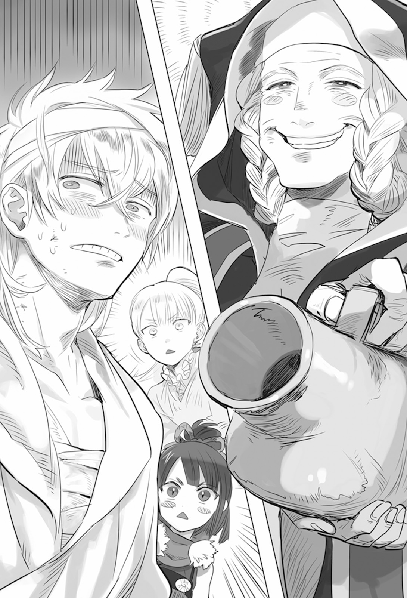
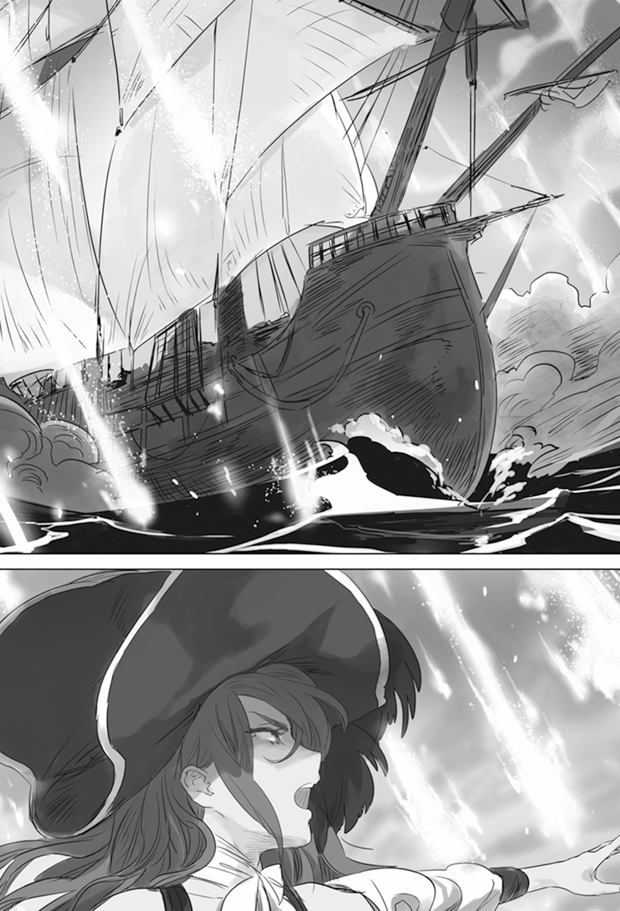

Chapter 1 – The Fleet’s Decisive Battle
.
Part 1
「Good grief, it’s truly foolish for someone to not know their place!」
Several days after the army that was led by Trystovy Dukedom’s great general Olten and Answerer Kingdom’s general Mikhail departed to Continerri.
The dukedom’s crown prince Bernardi was laughing in a good mood inside a room of his private residence in the capital Millianna.
「The dukedom will never submit to a savage who descended from beastman’s blood!」
Bernardi was continuing to stand at the forefront in the dukedom’s effort against Baldr to display his presence no matter how shoddy it was. Just the other day he personally welcomed the reinforcement from Answerer Kingdom was a part of that.
That wasn’t the only thing he did. Recently Bernardi was energetically doing his activity even more than Archduke Jack as the heir of the dukedom. There were a lot of young nobles who placed their expectation on his future.
──But at the same time that action also placed him at the forefront in receiving the resentment of the populace.
It was also Bernardi who reacted the most sensitively toward the insurrection of the populace at Continerri.
The class system that was the foundation of Trtystovy Dukedom was on the verge of danger once again.
His father Jack destroyed the kingdom in the past and took control of this country was for no other reason than to not allow the commoners to grow impudent like the merchants who ruled Mulberry.
As the heir of this dukedom, he had to plant the image of being even harsher than the archduke. It would be the end if a politician got underestimated in the world of politics. That too was certainly a definite truth.
Bernardi had enthusiastically created a bloodbath in his commoner hunting.
Commoners couldn’t possibly match the regular army that had been thoroughly trained. This principle could only be overturned if the commoners within the army seceded from the chain of command and turned into enemy.
The number of commoners who got executed as example until now had increased until several thousands. The amount of assets that were confiscated from the commoners had also reached a considerable amount.
Due to the severe punishment, the movement that tried to contact and work together with Baldr’s kingdom army had quieted down.
When Olten came back with victory shortly after this, the hope of the people who placed their expectation of Baldr would also be smashed to pieces. That was the only way the dukedom could continue to engrave their existence in history from here on too.
The only remaining problem that was worth mentioning was only how they would negotiate with Answerer Kingdom after getting indebted to them this time.
「──Your highness’s performance is truly splendid.」
The one who praised Bernardi shrewdly was the son of Count Valerie Ost, Batista.
Bernardi was thinking of this man who originally should have succeeded after his father’s position since a long time ago as his confidant in the future.
Bernardi trusted him as the symbol of the new generation and as someone who wished for his ascend to power more than anybody else.
Bernardi too had only gotten permitted by Jack to move on his own initiative just before the battle against Baldr began. Before that he was nothing more than a convenient decoration for the dukedom.
He would definitely make Batista obtained his peerage at the dawn of his ascension to the position of archduke.
The creation of that promise between the two of them could be traced back to several years ago.
「When this war is over──」
It was possible that the archduke would also retire wouldn’t it?
The worry of Jack recently was so striking that Bernardi could harbor such convenient delusion.
「There is nobody who can deny your highness’s achievement anymore.」
Batista’s expression was also loosening laxly seeing this perfect chance to remove his father Valerie.
As expected even Valerie surely wouldn’t be able to oppose the command of Bernardi when he became his lord as the archduke.
Now that it had been made clear to him that his influence was inferior to his father, the only way Batista’s wish could be granted was only through Bernardi.
「Umu, Batista. I promise that won’t forget everything you have done for me.」
「……It’s my honor.」
The force that was entrusted to Olten was an unprecedented large army that had never been seen before in the history of the dukedom. In addition they had even taken the risk of getting reinforcement from Answerer Kingdom.
Not to mention the two of them had directly experienced Mikhail’s overwhelming aura of violence when they met him. They never even considered the possibility of the dukedom losing.
「Ha-ha-ha-ha-ha!」
Bernardi’s loud laughter echoed inside the room.
Certainly the dukedom’s populace had lost their fang of resistance due to Bernardi’s harsh policy.
The dukedom had applied a thorough system of guilt by association. Anyone who resisted wouldn’t only have their family executed, even the whole village would become a target of purge.
Right now the commoners could only obediently wait for Baldr’s liberation. If not they would be annihilated before they could be freed from this oppression.
In front of such untouchable armed might that the commoners couldn’t possibly win against, the brand of despair had been pressed on them.
Although, it wasn’t difficult for human to endure if there was even just the slightest hope remaining for them. After all that was also how they had overcome all their hardships until now.
But unfortunately exception was something that existed everywhere.
.
Part 2
──Somewhere, there was a knight.
His strength as a knight was quite high.
He was someone with unusual background. When he was still a child, he caught the eye of a knight who didn’t have a child and got adopted by him. He then grew up and became a knight, even so he was unable to get used to his life as a knight because he was originally just a mediocre son of a farmer.
Luckily or unluckily, the father and mother who became his adopted parents had died from sickness last year.
When that happened, the nostalgic scene of his birthplace crossed the man’s mind.
His living situation had certainly become far more luxurious compared to a live at a rural area.
However he knew the luxury that a knight could enjoy was nothing much compared to the high class nobles.
Even though life in the village was poorer, there family and neighbors would lean on and help each other to continue living resolutely. The knight felt that such living was far more charming than his current life.
And then one day, the man was reunited with his childhood friend who had grown up to be a beautiful woman.
It didn’t take that much time until the two of them felt attraction to each other as man and woman.
In order to marry his childhood friend, the man begged his superior to take his childhood friend as that superior’s adopted daughter and wedded her to him.
The superior told the man that he would think about it if the man raised achievements in battle. The man was fired up and performed a conspicuous service at the battle of Mulberry.
The battle itself ended in defeat, but when the army retreated, the man beheaded several enemies even while he was seriously injured.
「──And yet!」
The man was liberated from the hospital bed with hope filling his chest. But what awaited him was the absolutely despairing reality.
The village where he was born tried to switch side to the enemy camp due to the village chief’s incitement. Then the village ended up being trampled down by Bernardi’s royal guards.
Not a single one of the villagers was allowed to live. The man’s biological parents and his beloved childhood friend also got tortured to death.
He couldn’t believe it. He didn’t want to believe it.
Perhaps his childhood friend alone managed to survive due to some kind of miracle?
The man tried to cling on that small hope, but a single casual word of his coworker destroyed even that.
「It seems the commoners’ heads are lined up at the plaza you know?」
Of course the man didn’t know.
That an old man who was controlling the dukedom from behind the scene was prioritizing for the heads of the family of the commoner knights including the man to be sent to the capital.
.
「──There is no way that no distortion won’t appear after such excessive action.」
Valerie who was watching over Bernardi and Batista plunging forward through the road of destruction on their own initiative from the shadow of the tragedy was holding a wine glass in one hand with his wife Idunn beside him while laughing in pleasure.
「As always, you are a really nasty person.」
Idunn also drank her wine with an exasperated expression while saying that.
It was Valerie who guided the archduke and Bernardi so that the credit for the feat was given to the youngsters.
It was Valerie’s miscalculation that it was his son who was at the lead in following Bernardi, but it was still within his expectation.
In Valerie’s plan, House Ost was also something that would be erased without a trace from this world. Rather it would save him the time to have Batista disappear too at this point.
Valerie mocked himself. He was truly an irredeemable existence for thinking of something like that.
If it was for the sake of his objective, don’t mention his son, he wouldn’t even hesitate to sacrifice his beloved Idunn.
When he looked back at the number of corpse that he had piled up until now, it would be too audacious for him to harbor human feeling at this late.
「……I love you exactly because you are this kind of awkward person.」
「Wha-?」
Valerie unintentionally raised his voice. Then he averted his face sullenly. Idunn laughed triumphantly seeing that.
「I decided to accompany you until that world because I know the root of your inhuman acts.」
「Hmph, who is the awkward one here. Damn fool.」
He didn’t have any intention to stop his heart that was heading toward destruction at the slightest, but he felt like his heart had lightened thanks to Idunn. It was truly embarrassing for Valerie.
.
A mere knight didn’t have any way to possibly learn about the unseen force that was at work in the shadow.
He wanted to make sure. He didn’t want to make sure.
Pushed by those contradicting urges, in the end the man came to the plaza of Millianna.
「OO…………OOOOOOOOOOOO-!」
Hundreds of heads with blank gaze were lined up carelessly.
The man’s body shook and he let out a low moan seeing there were several familiar heads among them.
(O god! Please I beg you, don’t show me her head here!)
The wish that came from the man’s soul got trampled very easily.
At the other side of the heads of his acquaintances, there was the head of his beloved childhood friend that was frozen in the expression of wailing.
Perhaps the heads of his parents were also nearby there.
But even accepting the death of his childhood friend was already beyond difficult for the man.
「──I’ll kill him.」
Crying or screaming wouldn’t become any consolation at all.
There was only one thing to do for the man. To take revenge for his beloved childhood friend. He had no need for other action and emotion than that.
After that the man didn’t remember how he got home.
However he felt like his mind was clearer than usual.
Killing the crown prince Bernardi.
Only that resolve didn’t change at all even after he regained his awareness.
The man wasn’t a member of the royal guard, but fortunately he had quite a high position within the knight order. Although he couldn’t join the expedition to Continerri because of his wound, he would be given the rank of company commander the next time he was dispatched to the battlefield.
When the man returned to work, he was ordered to guard the capital. He used that rare opportunity to start gathering information.
Strangely Bernardi’s security was full of holes.
When he went out for official business, more than a hundred royal guards would be assigned to him, but the security of his private residence was less than twenty people.
Such security could only be said as extremely insufficient for a country’s crown prince.
Was he thinking that the commoner couldn’t do anything to him?
The man’s stomach seethed.
But, although the security was less than twenty people, the man was still one person.
What should he do to outmaneuver the guards?
A perfect chance came to the man faster than expected without even any time for the man to wrack his brain.
That day he was ordered to guard the eldest son of Count Ost, Batista. Their destination was Bernardi’s mansion.
The other person who was appointed to guard Batista together with him was his trusted colleague. It wasn’t to cajole him.
Perhaps this was what they called divine aid.
As soon as they arrived at Bernardi’s private residence, the two of them were led to an antechamber. There his colleague pretended to have stomach ache and excused himself.
For the man who had nothing more to lose, he couldn’t think that this kind of chance would come to him anymore.
(As I thought, god is telling me to kill the crown prince. There is no other explanation than that!)
The man was convinced of that after he caught a maid and asked Bernardi’s whereabouts.
Unbelievably, the majority of the guards were kept at distance because Bernard was going to play with the beautiful women who had been prepared for him.
His hateful enemy was right over there──.
「Die. For the sake of my beloved who shouldn’t be needed to be killed.」
.
The door was opened violently. An expressionless knight was standing behind it.
Batista remembered that knight. Or rather, this man should be an excellent knight of the dukedom’s knight order who guarded him until this place today.
「Insolent! Just what is your business?」
「Shut up.」
The man cut down Batista with a single downward swing.
Batista crumpled on his feet without even being aware of what had happened. Bernardi was bewildered seeing that.
He never even considered that an allied knight would betray him. The background and personality of his royal guards should have been strictly investigated.
「You bastard! Do you understand what are you doing!? This high treason isn’t something that you can atone for with just your one life!」
「My fiancée, my family, my relatives, all of them have been killed by none other than you! Who else can you make to take the blame now?」
「D-don’t tell me……you are a family of the rebels?」
This time terror made Bernardi’s whole body to feel goosebumps.
He didn’t have anything that he could use to convince the man.
His absolute authority as the crown prince wasn’t of any use here. The armed might that he surrounded himself with also wasn’t nearby right now.
Bernardi regretted sending away his guards in order to play an indecent act with beautiful women together with Batista.
「S-someone help! I’ll give my savior any reward they ask for!」
「You bastard have gone too far. That’s why god is handing down his judgment to you.」
「S-stop! You are going to erase the future of the dukedom with this!」
「I don’t give a damn to the dukedom’s future.」
「I can’t die in this kind of place! There is no way I can die here!」
「How about testing whether you will be forgiven or not when you say the same thing to the people you killed in that world?」
Unfortunately, god wouldn’t punish human. It was always human who punished human.
Bernardi felt the white blade digging into his shoulder without any way to know who gave the order to the beautiful women who were presented to him and the knight who vanished by pretending to have stomachache.
.
Archduke Jack was furious by his son’s murder.
For Jack Bernardi was his only son.
He had three daughters, but everyone had been sent out to marry his retainers, so normally they wouldn’t be able to become his successor.
With Bernardi’s death, the decline of the dukedom’s unifying force would be unavoidable no matter who he appointed as his successor next.
Even without taking that into consideration, Jack had great hopes for Bernardi. No matter what anyone else said, Bernardi was the son Jack was proud of.
Jack who unconsciously feared Baldr had stepped aside from the limelight by entrusting matters to Bernardi who was being motivated as the crown prince, but seeing his son dead like this made him realized that doing that was a mistake.
(If only I stood at the forefront and managed all the domestic affairs by myself, would Bernardi stay alive even now?)
At this point asking that was pointless.
「Massacre the family, no, all the relatives and friends of the culprit!」
「T-that’s, it seems that the family and relatives of the culprit has already been executed……」
「Then kill all the people in his village, leave none alive!」
「By your will!」
The government official bowed his head so low it might touch the ground with how angry Jack was acting. In this situation he couldn’t possibly say that the village had also been exterminated beforehand.
It would mean his death if he carelessly say something here.
「We mustn’t let Bernardi’s death to end in vain! All the populaces of the dukedom has to be taught a lesson so that they won’t dare to go against the dukedom forever!」
Was this really that Archduke Jack?
The retainers of the royal court felt cold on their back seeing their lord’s frenzy.
Jack’s personality was mild-mannered as a ruler although it was originally caused by his feeling of guilt from killing his elder brother in a coup d’etat.
The retainers were harboring an indescribable anxiety of what would happen to the dukedom from here on. And then the worst finishing blow arrived in this timing.
「──I understand very well just how pained your majesty’s heart must be right now.」
The true identity of this old man who was enveloped in a dangerous air like a revenant was a meritorious retainer who helped built this country and the power in the shadow of this country. Those in the know all knew it.
「Oooo! You are here Count Ost!」
Jack hugged the visiting Valerie with a deeply moved emotion.
「You are the only one who understand what I’m going through right now. It’s really wretched what happened to Batista. Even though he is a promising talent who will shoulder the future of the dukedom……」
「No your majesty. My son is a failure who was unable to protect Crown Prince Bernardi. Dying for his blunder is the least that he could do to make up for it.」
「No, your son is blameless in this matter. It’s those lowly commoners who are in the wrong for not knowing their place.」
Batista was attacked while his guard was down. His wound was deep from being slashed from his shoulder until his heart. He died instantly.
There was also the fact that not a single one of Bernardi’s royal guard had died. It made Batista’s violent death to be even more precious.
At the very least he was the only one who put himself in harm’s way to try to protect the crown prince. Even if he died because of his poor luck due to that, there was no way for his devotion to not be praised.
Not to mention that Batista was Valerie’s heir. If he wished for it he could even become the dukedom’s prime minister in the future.
A noble with promised bright future sacrificed his life instead──.
It was only natural for Jack to feel sympathy for Valerie as fellow father who lost their son.
「Your majesty. As a father, I swear that I will definitely make up for my son’s failure!」
Jack involuntarily flinched due to Valerie’s intensity. He was radiating a dominating aura like in the past when they rose in revolt against the kingdom.
Valerie who had retired on the surface was saying that he would come back into the limelight once more for the sake of the dukedom.
There was no ally more reassuring than this for Jack.
「──That’s truly heartening Count Ost. No, Marquis Ost. Stay at my side and work fo rthe dukedom’s sake.」
When he noticed Jack already grasped Valerie’s hand.
「I swear, I will use this life until it run out for this country.」
Valerie sneered without anyone realizing it.
Setting aside for whose sake he was going to work for, he was saying the truth when he said that he would strive forward in order to accomplish his objective until his life ran out.
The next day, the dukedom government raised the rank of Ost House to be marquis and appointed Valerie as the prime minister. Olten who was hurriedly called back from the battlefield of Continerri was appointed as the great general as well as the field marshall. It was the proclamation that the dukedom was united than ever before.
As expected even Olten who felt that Valerie was suspicious didn’t even consider that he would go as far as scheming about his own son’s death.
With two heroes of the country’s formation standing up as the center of the government, the internal condition that was shaken by Bernardi’s death and the successive defeats of the dukedom army regained its stability for the moment.
On the other hand, the oppression toward the commoner was gaining even more strength──.
.
Part 3
Going back slightly in time.
Right after Baldr was victorious in his duel against Mikhail, he was hit by the explosion of rocket arrows and his figure vanished inside the smoke. Gitze yelled with a shaky voice seeing that.
「This is the greatest blunder in the life of this Gitze Mannerheim!」
The elevation of his morale from the victory was instantly blown away.
The beastman corps and the kingdom army would crumble without Baldr’s existence. What happened forced Gitze to realize that Baldr’s life was the greatest weak point of the kingdom army.
「UOOOOOOOOOOOOOH! Our king! Please be safe-!」
Gitze charged into the dense smoke while ordering his subordinates to deal with the culprit of this attack.
「Go secure that abominable weapon!」
「Ou!」
With a fierce rage that only beastman could understand, a unit of cavalry assaulted the force of Europa Church.
「Destroy the relics without leaving any trace! Hurry!」
「WHO ARE GOING TO LET YOU DO THAAAAAAT!」
The church soldiers tried to destroy the rocket arrows that they still hadn’t used up, but they didn’t have any time at all for that in front of the speed of the beastman cavalry that was beyond their imagination.
「Glory to the great name of Europa!」
The church soldiers gave up destroying the relics in a safe way and exploded themselves one after another together with the rocket arrows.
That fanatical act made even the beastmen who held firm loyalty toward the beast king to be astonished.
「Shit-! There is no medicine to cure stupidity……」
However the beastman cavalry that charged forward even at the risk of their life succeeded in finishing off several church soldiers before they could self-explode. And so the secret of the rocket arrow that Europa Religion was hiding now fell into the hand of the kingdom army.
「Our king! Are you safe!? Please respond if you are safe–!」
The scene that was reflected in Gitze’s eyes was despairing.
The ground was scorched by a great heat.
There were the plants and trees that were felled and carbonized. Also some lumps that were previously human.
Gitze would commit suicide without any hesitation if one of those lumps of meat was previously Baldr.
「O beast god Zoras! Please grant your strength to our king!」
Baldr himself at that time was under a rock that was located several hundred meters from Gitze. He was grimacing due to the pain in his whole body.
At the moment of the explosion when he thought that this was it for him, Baldr strengthened his body to the limit and used the magic Friction Zero to escape without decelerating at all.
It was an escape method that was possible because magic was still usable even when the power of King’s Gate was sealed.
Thanks to that he crashed on a rock with a speed of several hundred kilometers per hour. He would die if he landed just slightly wrong, but Baldr won the bet.
「……Ouch ouch ouch ouch ouch! As expected it was dangerous doing that without braking……」
「My king-! I’m glad that you are alright-!」
「I’m not really alright though.」
The wound on his forehead was deep and blood was continuing to flow even now, on top of that his bones had broken in at least five places. It was most fortunate already that he still kept his life.
(There is no time to leisurely recover from my wound in this kind of place though……)
It was the best Baldr could do to keep his brain running. Then Baldr’s consciousness was cut off with Gitze’s approaching face as the last thing in his mind.
「P-please hang in there! Our king-! NIOOOOOOOOH!?」
Gitze jumped down from his horse to help Baldr who slumped down limply. There he stepped on a round object and he slipped up slightly.
「Eeeei, dammit! What the hell is this-!」
He found something blunt and sooty, but it was clearly a handicraft that was out of place here.
It was a silver metal cylinder that was engraved with complicated patterns.
Perhaps it was the same kind of item like the rocket arrow. It would be too problematic to leave this thing here.
「I’ll bring it with me just in case! My king, please endure it for a bit right now!」
Gitze suddenly held up Baldr in his arms and jumped on the back of his horse ocne more.
They didn’t know. The cylinder object that they only thought as an extra of their spoils of war was actually the object to seal the King’s Gate.
It would take a bit more time until the existence of the church’s holy relic got exposed in front of Baldr along with the rocket arrow.
.
The heavily wounded Baldr was swiftly carried back to Mulberry.
The wound on his head was especially deep. There was a risk that there would be after-effect even if he regained his consciousness.
In the worst case that Baldr died, the kingdom army would be effectively destroyed at that moment. But it also didn’t mean that everything would be peachy as long as he kept his life at least.
Unfortunately Silk didn’t have the strength required to consolidate the kingdom army if she was left behind alone.
Mulberry’s maritime guild also didn’t have the political strength and justification to conquer the dukedom. They had to make Baldr recover completely no matter what.
「Gather all the famous doctors here!」
Even the young leader of the Seven Elders who usually acted mildly, Augusto was raising his voice and yelling to his subordinates. From there it could be understood just how chaotic the situation was.
The situation barely stopped from devolving into a panic was because the information network that Baldr created was providing accurate information to Mulberry.
The network used the radio that was created with the knowledge of Baldr’s previous life, Oka Masaharu. The movement and wellbeing of the beastman corps under Baldr’s command, Silk’s main force, and Ramillies’s Antrim army were reported back in real time.
Without this information, Augusto who hadn’t taken the post of the chairman of Seven Elders for long would be hindered in his management of Mulberry.
But, that information was getting harder to be obtained with each passing day.
.
Part 4
A member of the intelligence unit that Baldr formed, Cameo Transin was bewildered.
He was a veteran intelligence agent whose age had passed 50. Previously he was a private informant who sold information to mercenary and bandit.
He was invited to Antrim with Zirco’s introduction and he had worked for Baldr for several years. He was an initial member in the organization and he was counted as one of the seniors.
The reason of his bewilderment was because the information network that was laid out throughout Trystovy Dukedom had been torn to pieces and suspended during this several days.
If it was just the disappearance of one or two people then he could think of it as mere coincidence, but when the number had surpassed ten then he could only see this as man-made disturbance.
But it was suspicious that his spies got found out in so short time like this.
From the beginning Baldr didn’t expect his spies to be able to do sabotaging action or stealing secret information.
Of course there would be nothing better if they could do that, but Baldr’s information network was focusing their effort in gathering information like the circulation of goods and money and rumors among the people as fast as possible.
In other words his spies had little need to dirty their hand with illegal activity. Because of that the possibility of them getting found out by enemy was low.
The majority of the informants that got increased since last year didn’t even know that they were participating in the intelligence activity of another country.
「Just what is going on……my head can’t think up of anything……it can’t be helped but I guess I’ll withdraw.」
Perhaps it had been more than ten years since the last time Cameo was this shaken up. Most likely Cameo’s identity had also been found out by the one who was doing this.
It was vexing to abandon the information network that he had spent much effort to build, but it was more important to save the life of his precious intelligence agents.
Cameo hurriedly destroyed the documents that were written with cipher and classified information and also the radio equipment, the secret technology that was more precious than anything that only Baldr’s faction possessed.
The equipment could be created once more, but having it falling into the enemy’s hand was something that had to be avoided no matter the cost.
「──Looks like I’m just a step late.」
「Who-?」
The regretful low voice of an old man resounded just when Cameo finished destroying the radio equipment thoroughly.
He was unable to feel the presence or even sound of anyone until he heard that voice.
Someone like Cameo who was highly experienced as an intelligence agent sensed that this old man was a terrifyingly skilled person in the same business with him.
「It’s too bad, I have a business with that very strange device.」
「Hou, so then you won’t be able to overlook me?」
Cameo observed the opponent’s approach. He wouldn’t be able to win here if he fought head on.
As expected the opponent wouldn’t just quietly let him leave, but he should have killed him already if his purpose of coming here was just to kill him.
Perhaps he would capture him alive to interrogate him for information.
If that was the case, then he had a chance to win even if the opponent was more skilled than him.
「Yes, I don’t mind overlooking you. That’s why can I ask your hand to let go of that dangerous object?」
The old man shrugged when Cameo glanced at the switch for the poison gas that he had prepared as his final trump card and also for his suicide.
That unconcerned behavior of the strong made Cameo finally recalled.
To think that he would encounter such big shot here.
「I never expected that Caolila Basque will personally come for me.」
「No no, I’m already at this age as you can see. I’m just an old man who is nearing his retirement.」
「That’s……a joke isn’t it?」
Certainly this man’s age might have crossed 70. However this old man had mastered something inexplicable that youth wouldn’t stand a chance againt.
People called this old man as 「Ost’s Shadow Blade」.
He was a legendary assassin who had sneaked through many heavy security and assassinated many political enemies.
This wasn’t an opponent that someone like Cameo who fundamentally wasn’t good with fighting could match. If this old man felt like it, he would be able to kill him without him ever being aware of it in the first place.
What Cameo could do when in the presence of someone with absolute strength over him was just negotiating using his life as betting chip.
「And……what kind of stroke of luck there is that you will overlook me? I have never heard of you having the compassion of ordinary person though.」
When speaking of Caolila, his name was the synonym of terror that anyone in the know would be aware of.
The number of spies who had been killed by him was innumerable. Many of his subordinates who had stopped contacting him during these several days must have also gotten killed by him.
「Of course, I’m not going to overlook you because of compassion.」
He could be killed anytime, but it would be troubling to kill him right now.
In the end this was within the category of pastime or perhaps a game, but Caulila thought that his lord ’s childishness for this kind of thing was amusing.
This should be forgiven as a secret amusement of someone at the end of their life.
「First, I wish to entrust you with a message for his highness Baldr.」
「Message?」
What was the reason for this person to expressly ask him to do that for him?
In the first place what kind of message a member of the dukedom’s intelligence agency could have for the prince of an enemy country?
「……Well, I can do that.」
No matter what Cameo thought within his heart, it was a cheap request if his life could be saved with that.
Cameo replied while putting on a mask of composure as much as possible.
Caulila wasn’t someone who couldn’t see through that, but the bold front of a man was something that always had to be respected. It was even more so when it was done by someone risking his life.
「Then, I ask you to convey the words of my master Count Valerie Ost. Your highness’s strength is magnificent, but you are still lacking malice. Watch and learn from my malice. That is the message.」
「If it’s malice then I think his highness has seen it thoroughly though……」
The harassment from Mauricia Kingdom’s bureaucrat noble, and then the prejudice toward the beastman blood that was really hard to erase. Baldr had overcome all of those. Cameo couldn’t imagine that Baldr would be shaken at this point just from learning the malice of a single noble.
Caulila felt that frank impression of Cameo as something radiant and precious.
In the past he too believed that Valerie and Viktor would sweep away the outdated notions of the kingdom and built a new era.
Valerie had sank into a whirlpool of malice where even the bottom of abyss was lukewarm compared to it due to his best friend’s death. It was too much asking for other people to understand it.
「My lord’s malice is relentless just so you know. But my lord also hope that his highness won’t be swallowed by that malice.」
It went without saying that the man called Baldr wasn’t someone with the disposition of stooping into malice.
Even if someone irreplaceable to him was killed, he would surely continue walking the righteous path without falling to the inhuman path.
He wouldn’t be able to be fit as a hero if he wasn’t like that.
However from Caulila’s perspective, Baldr was still making light of other people’s malice too much.
「In short, tell his highness to resolve himself.」
Though he believed it would be completely impossible to avert the harm from Valerie’s malice no matter how resolved Baldr was, but some things were better left unsaid.
「I will definitely convey that message to his highness. Although I think it’s your side that should be resolved here.」
Caulila didn’t give any reply.
If it was resolve then he already had it since a long time ago. After all a certain malice that had reached its peak wouldn’t even be allowed to destroy itself and could only wait for someone else to destroy it.
(Aa, my pitiful master. Your suffering will soon be rewarded.)
That reward would be in the form of none other than death that was smeared by malice.
Caulila had no intention of yielding the role as the outrider of that path to anyone else.
.
Part 5
Baldr was staring in a daze at Mulberry’s port from his bed.
It seemed he had been in a really critical state for a moment there. As expected, heabdutting on the spear that was filled with all of Mikhail’s strength was simply an act that had gone far beyond recklessness.
He was disqualified as a commander that was in charge of a country by getting into the verge of death like this.
However Baldr thought that it was exactly because of that reckless act that he could survive like this when by all rights they should have killed each other together in that battle.
Baldr’s previous previous live Oka Sanai said at that time 「To win against the resolve to die, ye hath to face it with an even stronger resolve to live」. It was now that Baldr was able to truly understand the meaning of those words.
The sea breeze was getting stronger, so Baldr lifted his body to close the window. But in the middle of that an intense pain ran through his chest and he grimaced.
「Ouch ouch ouch ouch!」
Other than the laceration on his head, his broken ribs and shoulder blade were his heaviest wounds.
Of course his broken arm and fingers and fractured bones were also a problem, but his ribs and shoulder blades became filled with intense pain just from him lightly sitting up.
Silk entered inside the room carrying a water jug while Baldr was curling up in pain.
「You shouldn’t do that! Your body still must not move!」
Silk hurriedly held Baldr’s shoulder and rubbed his back in concern, then she slowly laid him down on the bed.
「Sorry, I thought that I could at least close the window but……」
「The wound in your internal organs is only barely closed with magic, so you must not force yourself like that!」
Silk puffed up her cheeks in anger.
At that day, Silk and Satsuki pulled back their troops in order to join up with Ramillies. The message that Baldr was heavily injured reached them at the next morning of that. Because they hadn’t learned of Olten’s retreat at that point of time, they were forced to follow the strategy to join up with Ramillies.
Then when they finally free to return to Mulberry, they found Baldr in a critical condition. It couldn’t be helped that the girls were excessively worried.
Even so──.
「Here, say aaaah.」
「Silk, I’m just going to drink water. There is no need for that right?」
Baldr who was under not a little amount of stress was protesting because he could guess how things would develop from here.
「I won’t allow it! You have promised that you will be obedient and listen to me until your broken bones are healed!」
「Uuu……if you tell me that……」
When Baldr recovered his consciousness, he got severely scolded by Silk and Satsuki.
The general was personally getting into a duel, and in the end he headbutted a spear and his bones were broken everywhere before he fell into unconsciousness. The girls’ argument wasn’t without reason.
Baldr understood that. He understood but…….
「AAAAAAAAAAH! Not fair nya! It should be my turn to take care of Baldr today nya!」
Satsuki ran into the room with teary eyes at that timing.
For some reason there were scratches and bruises all over her body. Just what had she been fighting?
「Oh, is that true? I thought that you wouldn’t be able to move after training with Gina-sama.」
「Lies nya! I heard it from Gina-sama nya! It was you Silk who asked her to train me hard without holding back nya!」
「Tsk……」
The maidens who were hungry for skinship were getting out of control.
Especially Silk who had gotten away from the watching eyes of her father Marquis Randolph here. She had even thrown away her aspect as a young lady who was naïve of the outside world to the wind and ended up like this.
「……Silk-sama, don’t you think that you have overdone it a little?」
「Uu……I’m sorry! I don’t know where did the idea come from!」
Even so when Gina appeared with an exasperated expression, as expected Silk gave up because there was no way she could get away with lying in this situation.
Silk’s shoulders dropped despondently. Satsuki snatched the cup away from her hands and enthusiastically held it out toward Baldr.
「Here! Say aaaah nya!」
「Sorry, I already drank.」
「No way nyaa~~~~! Then what about food? Have you eaten dinner?」
「It’s still three o’clock you know, Satsuki……」
Gina watched the two’s flirting in delight before she threw a bomb in the middle of them.
「You have taken in enough liquid Baldr, so now you need let out what need to be let out……」
「Eeeeeeeh? Gina-sama, what are you talking about?」
「Who are you calling Gina-sama? Can’t you see this chamber pot that I’m holding?」
「Gina-obaachan! Please spare me just from that! T-that will put my dignity as man into danger!」

──*Gulp*
Baldr got a bad premonition and fearfully moved his gaze. He found two maidens breathing roughly with reddened face standing there.
「T-this is the right……no, the duty that is given to me as Baldr’s first wife in the future!」
「Silk still haven’t become Baldr’s wife yet nya. And so I absolutely won’t give up my preferential right today nya!」
「I’ll do it myself carefully no matter how long it take! Let’s do that!」
「Baldr, you have no right to speak.」
「There is no need to worry nya. T-this, will be the first time for me, but I’ll work hard if it’s for Baldr nya.」
After that, about whether Baldr was able to protect his dignity as a man or not, all the people involved kept quiet and wouldn’t say anything about it.
.
「──Just now, I got the feeling that delicious chance just got snatched away from me.」
To be more specific, a great feeling of lost as though she had just lost a chance to be able to have sexual contact with Baldr was filling Urraca who was far away at Marmara Sea.
「Please get your head into the game properly. I’m relying on you here.」
Jose looked troubled and remonstrated Urraca who was suddenly pouting.
Jose highly evaluated Urraca as a sailor more than anyone, but it wasn’t the case when it came to her relationship with Baldr.
「I don’t hate being relied on, but because of that the time I can spend at Baldr’s side is really little! I demand for equal opportunity!」
The information that Baldr was seriously wounded wasn’t brought to Urraca.
As expected even radio couldn’t reach a ship on the sea.
If Urraca learned about that information, she would definitely rush to Baldr’s side no matter what she had to leave behind.
「Spare me……」
Jose wouldn’t be reluctant to support Urraca’s love life if only there wasn’t this war, but it was too impossible for that at the present situation.
「To be honest that weapon is cheating. At the very least it’s impossible to dodge it with my ability as sailor. I would have died in Riga if I was unlucky. That’s just how dangerous this new weapon is.」
Right now Jose’s name was reverberating throughout the world as the first admiral in history who successfully launched a surprise attack toward a navy’s base using a fleet.
The loss of Riga’s function as military port meant the death of the dukedom navy.
Even a fleet couldn’t continue to sail indefinitely on the sea. All ships had the need for resupply and maintenance at the port. And a navy base was a place that possessed the whole knowhow for all of those necessities.
If there was a ray of hope for the dukedom side at this matter, it was that the human casualties from the attack had been suppressed at minimum due to the dedication of the old admiral Bonifatio.
Even if the facilities had been burn to the ground, it was possible to recover somehow as long as the people in it were still alive.
After all training skilled worker who was thoroughly familiar with every nook and corner of a ship could easily take ten years.
However there were the practical problems of how Riga had mostly lost the ship spare parts, weapons, food, reserve personnel, unloading facility, and many other things. It couldn’t be used as a base anymore.
The dukedom would need a lot of time whether they wanted to rebuilt Riga or moving the base to other place.
Anyone who had the experience of commanding a fleet could easily guess that the dukedom had no such leeway time wise.
Therefore it was the natural development for the dukedom to muster all their strength for a decisive battle between fleets.
The first thing Jose did after returning triumphantly from Riga was to link up with Urraca because of such circumstance.
「To put it simply that weapon is a projective weapon right? Something like an arrow that is flying by spouting fire behind it.」
「It’s a dangerous arrow that can sink a ship with one shot though.」
「As expected it will be a pain to not allow even a single arrow to hit the ship……」
Even so Urraca didn’t say that it was impossible. As expected from her.
The first thing Jose did after the linked up was reporting the existence of rocket arrow the enemy used.
Bonifatio had certainly did the best he could to protect Riga, but he still wouldn’t be able to avoid the criticism of being thoughtless in regard to how he showed the existence of their secret weapon to Jose.
When Jose imagined him getting into the fleet decisive battle without knowing about the rocket arrow’s existence, he felt a chill as though his spine had frozen.
「If we are careless, we might get annihilated five minutes after the battle start. I can understand now why the enemy is still assured of their victory.」
「Good grief, I wish I can push this troublesome battle to Baldr at least this time. The range of our flamethrower is short after all.」
「It won’t even be a fight if we can’t close the distance. Our side would also prepare a countermeasure if only we knew the enemy has that kind of weapon.」
The information regarding Baldr’s secret technology was being made available bit by bit. At Sanjuan Kingdom the development of firearms was hastened up due to their cooperation with Baldr.
Even among all of them, Jose believed that the existence of「cannon」 would greatly change the shape of sea battle.
However unfortunately the creation of those weapons was still at the testing phase. The time wasn’t enough for those weapons to be usable in this decisive battle.
「Well, we can only do everything we can. It will be better the greater Baldr’s debt to me become.」
The compensation of Urraca’s help would naturally be Baldr’s body. She would collect the debt by all possible means when the war was over.
「Uhehe……just you wait Baldr……guhihi」
Urraca showed a predator smile that a maiden must not show to other people. She wiped her drool that almost trickled down.
She wouldn’t demand to monopolize Baldr for herself. It would be fine if she could just borrow him for a bit. She was going to search for a common ground with Silk and the other girls around that.
She would be able to fight for thirty more years if she could just have a sweet memory with Baldr and a child who shared their blood.
Urraca was a count of Parma House who served as the active navy minister of Majorca Kingdom. The matter whether it was alright or not for someone of her status to become an unmarried mother was set aside for now.
「There is no better chance than this to make Baldr indebted to me.」
The pressure from Urraca’s wild delusion made Jose sensed danger instinctually as a man. It even made him questioned whether it would be alright for them to win the battle like this.
(Sorry……I’ll pretend to not know anything about this matter.)
Jose himself was far from being able to be called a wise general when it came to interaction with woman.
May god gave Baldr happiness──Jose prayed as though this matter was completely unrelated to him.
.
Part 6
Answerer Kingdom’s fleet was sailing on the sea several hundred kilometers to the southwest from Mulberry. The gentle sea breeze was carrying the warm air from the south.
There was a rumor that the continent that was located to the south of Aurelia Continent was so hot that the people there were living without clothes. This heat made one unconsciously wanted to believe that rumor.
「You look like you are in a bad mood, admiral.」
「Those dukedom bunch, they should be ashamed that we have to go into a decisive battle because of such foolish reason!」
The humid air seemed to have gotten to the fleet admiral Percival. He spat out in irritation in respond to the joking words of the ship captain Domitory.
He himself was wishing for a decisive battle from the beginning, but he couldn’t believe how the dukedom’s navy had lost their base in Riga that had existed since the beginning of Trystovy navy.
In the first place, it was also unbelievable how the dukedom only had a single navy base.
Answerer Kingdom had four large navy bases. Percival’s fleet belonged to the base at Sevastopol that was located at the northwest.
At the large island to the west of Nedras Kingdom, there was an important base called Novorossiysk there that was in control of Galeares Sea that had violent seasonal winds.
And then there was the home port for the main fleet that was located near the capital that was called Konigsberg. While Arkhangelsk was where the north fleet was using as their base. Those ports were known as the bases of Answerer Kingdom’s navy.
Trystovy navy too didn’t only have Riga as their only base. Orignally Mulberry should function as a secondary base, but Riga became the only base as the result of Mulberry rebelling against the dukedom.
It was impossible for the dukedom to spare money and manpower to develop a new home port for the navy while fighting a civil war.
Even so now that Riga had stopped functioning like this, they should have done anything they could to establish a military port at Taranto at the west before it came to this.
Taranto was a small trade city at the western part of the dukedom that was relatively near to Kadiros Kingdom. The port there was small but it was quite developed.
Even if it was somewhat small, if there was a military port at Taranto then it would also be easy to send aid from Answerer Kingdom.
「Although it’s impossible, if by any chance we are defeated in this decisive battle, both the dukedom and us will lose control of the sea. We won’t have any hope to take it back.」
Now that they had lost Riga, in case they were defeated here Answerer Kingdom’s fleet would be forced to return to the faraway Sevastopol.
The dukedom fleet would also have to surrender to the kingdom or sought asylym to Answerer Kingdom. They had to choose one of those two options.
It would also put Answerer Kingdom’s national strategy at great risk if the dukedom navy had to withdraw from the dukedom.
「──There is no more point to keep talking about it. Let’s just focus on winning the battle before us.」
Percival finally finished venting his anger after Domitory admonished him so.
Percival himself understood that. However he couldn’t erase his distrust──his doubt toward Trystovy Dukedom’s navy and couldn’t treat them as an equal ally.
The admiral of the dukedom fleet Federigo who got such distrust directed toward him wasn’t simply venting his anger anymore. He was completely infuriated.
「This wouldn’t happen if only they placed a uselessly big ship like Gigante to defend Riga!」
What a negligence, what a foolishness, what a disgrace.
The dukedom navy that allowed their home port to be burned to the ground would be branded with the stigma as incompetent for several hundred years from now. For a navy allowing their home port to be burned was no different from allowing their homeland to be burned.
He couldn’t help but feeling how unbelievably stupid they were for allowing Riga to be almost completely empty just because such attack was completely unprecedented until now.
That wasn’t all. Bonifatio who whipped his old bones and died splendidly was Federigo’s ship captain when he was still just a new soldier.
Even now Federigo still remembered his admiration toward Bonafatio who he saw as an example of how a man of the sea should be. No matter what he couldn’t come to an acceptance at how he helplessly allowed that man who had returned back on land to die like that.
「──Pathetic. In the past our navy rivaled not only Sanjuan Kingdom but even Answerer Kingdom. But now we are treated as a minor actor even in our own sea territory.」
This was the other half of the reason why Federigo was enraged.
There was no doubt that they were at their own sea territory, and yet the dukedom navy had gone through many defeats and reduced in number. Because of that they ended up handing over the command of the combined fleet to Answerer Kingdom.
Without the assistance of Answerer, far from being able to secure the power to fight the forces that had gathered in Mulberry, they wouldn’t even be able to preserve their existing fleet.
Answerer also had more ship than them. In addition the secret weapon that could overturn the sea battle from its foundation was also provided to them through Answerer.
At this rate even if they won this battle, the dukedom navy would only be placed under Answerer Kingdom’s navy. Their worthlessness would place a great burden not just on themselves but also to their descendants.
「……It become like this also because those people in Mulberry are borrowing the help of outsiders like Sanjuan and Majorca! Those damn traitorous pigs!」
If the enemy was just the maritime guild, they would be able to repel them without even any need to do something like borrowing the help of Answerer Kingdom.
The more Federigo thought that, the more Federigo’s chest was flooded with anger that was burning him inside.
「Just watch right now! I’ll show you all that the dukedom navy isn’t inferior at all compared to Answerer Kingdom! I’ll bring back a proclamation of victory to the late Admiral Bonifatio!」
The first fleet of dukedom navy under the command of Federigo was the last sea power in the dukedom’s possession.
If the coast guard and the ships that survived from the defeated fleets were excluded, the moment the first fleet was defeated would be the moment that the sea power called the dukedom navy was eliminated.
Of course the rage that Federigo harbored was genuine.
However, as a human rage was the emotion that provided them with the most aggressive energy. Without that energy, he would have been crushed under the heavy pressure. That too was also a fact.
.
「──I guess the battle at sea will begin soon.」
「Indeed. In this season, the battle will be carried out today or tomorrow as long as the weather isn’t too bad.」
Caulila poured a hot mint tea in front of Valerie with a perfect and elegant movement without any pause at all. It was the tea that Valerie loved since his youth to change his mood.
After taking a gulp of it, his body relaxed and reclined on the back of his chair. He rubbed the corner of his eye tiredly.
The exhausting work as the prime minister of the declining dukedom was enough to sap the energy from Valerie’s old body.
Recently his sight was becoming blurry and his sleeping time was getting shorter. It wasn’t because of the particular habit of people with old age to be early to bed and early to rise.
Currently Valerie was so exhausted that his sub sympathetic nerves weren’t working normally.
Even so, when he thought that this would be the last time he mysteriously became able to push himself to do his best. He couldn’t possibly cut corners with the culmination of his lifework just before he was tired.
「If the dukedom lose in the sea right now──」
「It will be checkmate for the dukedom.」
Unlike the army, the organization called the navy was difficult to rebuild. If Federigo’s first fleet was destroyed, the revival of the dukedom navy would need more than ten years.
Although the dukedom wouldn’t have the budget for that, so the possibility of the rebuilding itself would be gone.
The dukedom’s capital was located inland, but the nature of the country since its formation was as a maritime nation.
If the merchants and technical experts who were affiliated with the dukedom learned that the dukedom lost their sea force without any possibility of recovery, the rate of their escape would be accelerated.
Even at the present time, the escape of the commoners because of the heavy tax that was levied on them was in the process of becoming a societal problem.
Even if the dukedom wanted to prevent that, the border was connected by land without anything to block the way so it was fundamentally impossible to prevent the escape of the people.
However if Baldr became victorious gradually like this, it wouldn’t be possible to wipe away the dregs of the dukedom’s evil that had been accumulated until now.
「And, how is Baldr doing?」
「His life was in grave danger for a brief moment but……as expected from a hero. He has already recovered to the degree where he can walk around.」
Surprisingly Caulila had an accurate grasp of Mulberry’s information.
His information network had inferior speed compared to the information network of Baldr’s faction that was using radio, but his was superior in accuracy instead.
In this kind of intelligence activity, connections with many people that had been cultivated for many years meant everything.
No matter how excellent the organization and personnel someone had, it wasn’t easy to oppose the connections that had been created by spending much time and effort.
The spies from the kingdom’s side had gotten swept clean from the center of the dukedom was also because of the work of the sweeper of the intelligence agency that Valerie had built.
Of course this wasn’t because Baldr’s information network was inferior.
It was because fundamentally the intelligence agency that Baldr needed had the concept of learning information that anyone could learn faster than anyone else. His intelligence agency didn’t put much focus on unlawful information war.
「Winning completely against an army of 20000 under the command of that Mikhail with only 3000 men, and recovering within several days even after getting seriously wounded. A hero is really something terrifying.」
「Truly. There won’t be any objection even if we called that unreasonable.」
Caulila was smiling calmly even while saying that. That was because he noticed that his master was in a good mood.
Valerie believed that there wouldn’t be any problem if it was Baldr. Even so he was unable to discard the doubt that there might be the one to ten thousand chance of something going wrong.
Even with Valerie’s discernment, he was unable to gauge the strength of the man called Mikhail Kalashnikov who was the pride of Answerer Kingdom.
He didn’t doubt Baldr’s victory if it was a king, but what about as a warrior?
Even if Baldr could win the battle, what if he got dragged into a duel?
Perhaps Valerie’s recent exhaustion wasn’t just because of the exhausting work as a prime minister, but his worry for Baldr’s well being was also playing a large part to it.
Even Caulila who possessed the skill as first-class assassin of his generation would beg off from being ordered to take on a beastly genius like Mikhail.
Baldr faced such genius and won by himself even if he got seriously injured doing it. As expected Baldr’s caliber wasn’t that of an ordinary person.
With this Valerie too would be able to sleep peacefully from tonight.
「──But a hero can misread the caliber of the small people exactly because they are a hero.」
Valerie put on a ferocious smile that was filled with his heartfelt malice.
It seemed that he was immediately inspired with a new serpentine wisdom as soon as he felt relief.
Although with Valerie’s style in showing parental affection, he wouldn’t be satisfied by merely pushing someone into a ravine, he would also drop a rock, pour oil, and lit a fire in addition. From where Baldr was standing it wasn’t something that he would be happy at all to receive.
The master that Caulila knew wasn’t someone who would think to sleep and rest his body leisurely after feeling relieved by any means.
「Don’t laugh.」
Valerie sulked sullenly seeing Caulila’s expression, but Caulila didn’t pay that any attention and courteously bowed before raising a corner of his mouth as though he had waited for the timing.
「How about another cup of tea? Today we have just obtained a good quality tea that is the first pluck of the spring.」
「It’s also a servant’s duty to make their master look good you know?」
「Of course, I intend to do everything in my capability to treat my lord reverently no matter the time. Valerie-sama is truly a master who is worth serving.」
「Hmph. Since when it’s the job of a servant to look at his master with a warm gaze as though he is watching a family member blundering around?」
「Pardon my rudeness Valerie-sama, but isn’t a servant who has been an accompaniment for dozens of years is already no different than a family?」
Valerie became speechless by Caulila’s insolent words.
「……You are malicious at heart just like your master huh.」
「Well well, to think that I will receive the seal of approval directly from my master. That means that my effort in learning from my master hasn’t been in vain.」
「However you are still lacking diligence, Caulila. I am a man who is kind to my family.」
This time it was Caulila who was taken aback and speechless by Valerie’s completely unimaginable words.
「……I see, this Caulila is still completely not at my lord’s level when it come to maliciousness.」
.
Part 7
Sanjuan Kingdom and Majorca Kingdom’s fleets had joined up with the maritime guild’s fleet that was commanded by Admiral Barbarino. Their fleets then formed a beautiful three lines of ships.
The warm wind from the south shook the sea surface and the long foaming waves on the wake of the ships looked as though they had been painted by brush.
It was the first meeting of Admiral Jose and Sanjuan Kingdom’s fleet, but Barbarino had already experienced joint naval operations many times with Urraca. Their cooperation with each other didn’t show any shoddiness at all.
The skill of Admiral Barbarino who had protected Mulberry from the dukedom throughout so many years could only be described as splendid. It made Urraca understood how the maritime guild that was nothing more than a gathering of civilians could protect their self-autonomy until now.
Also, the fleet of Sanjuan Kingdom was already like a sibling for Urraca. The fleet of Majorca Kingdom was running at the lead of the trident formation as the cornerstone of the cooperation between the three forces.
「I don’t know anything about the admiral of Answerer Kingdom, but Federigo of the dukedom is a tough opponent.」
Barbarino rode a small boat to board Admiral Jose’s flagship to have a war council with the others. He was folding his arms with a bitter expression.
He and Federigo had contested each other for the control of Marmara Sea until now. They considered each other as worthy opponent.
Barbarino had a slight superiority when it came to commanding a fleet, but Federigo was outstandingly skilled in reading the battlefield’s atmosphere.
The two of them always wanted to settle the battle between the two of them one day, but that chance had never come. However today would be the day they would settle things between them.
Unlike before where their main mission was to keep hold of the sea lanes, this time the battle would be genuinely a decisive battle between fleets.
The option of fighting only when it was possible to win and running away from a losing battle didn’t exist this time.
That was exactly why Barbarino couldn’t help but feeling excited with the prospect of facing his rival.
「It seems the admiral of Answerer Kingdom is also someone with bright future prospect you know? It seems the one with the right of command at their side is this admiral.」
「You are saying that Answerer Kingdom is taking command of Marmara Sea!?」
Originally, when a navy was fighting on sea, the navy who made that sea territory as their turf would be prioritized to hold the command. Barbarino thought of how frustrated Federigo must be and felt enraged.
Although Barbarino was allowing Urraca’s fleet to lead at the forefront, Barbarino’s maritime guild’s fleet held the higher rank of command. That should be the custom of navy.
「That’s because the dukedom’s navy can’t even maintain itself anymore without the support of Answerer Kingdom……」
The dukedom that was at the verge of ruin didn’t have the power to make demand as an equal to their ally.
Jose felt pity toward his enemy due to that fact.
There was no doubt that this result was brought about by the situation where the dukedom had to secure Answerer Kingdom’s patronage no matter what.
「How displeasing! Let’s teach them that this Marmara Sea isn’t so accepting to outsiders.」
Although not as much as Barbarino, Urraca was also not amused that Answerer Kingdom was making a move to their turf here in Marmara Sea.
Naturally they were brimming with fighting spirit to beat up the enemy thoroughly.
「Umu, as expected from Tormenta Negra. It’s exactly as you say.」
Barbarino nodded enthusiastically in complete agreement.
Sailors by nature were a type of people with strong attachment to their turf.
In that sense, both Barbarino and Urraca weren’t simply ally, they were sharing empathy with each other as fellow sailor who was raised in Marmara Sea.
「I also have no objection. The problem is the weapon that is in the possession of the enemy fleets.」
Jose had been doing nothing but thinking up a countermeasure for that since a few days ago.
Against rocket arrows, they had no chance of victory in long range battle. They had to compensate for it in other way.
If they faced the enemy head-on with only the firepower at hand, it would be hard to win even with Jose and Urraca’s skill.
「Admiral Barbarino, do you have what I asked with you?」
「I came here with that thing loaded up in my ship just like you asked but……what use something like that have?」
「This kind of haphazard method isn’t fitting with my style but……it can’t be helped because we don’t have time to test it before the real battle.」
It was Jose’s style to remove the uncertain factors as much as possible and did everything he could to win.
He was ashamed to rely on this kind of improvised idea, but it couldn’t be helped because he couldn’t think up of any other good idea.
「It looks like we will be able to witness the magic trick of the wise general Jose Liberiano huh?」
Urraca laughed teasingly. Jose faced her with a serious expression.
「The best that I can do is only to confuse the enemy alright? But to make use of that confusion to bring us to victory, it will depend on your ship handling skill, Urraca-san.」
It was an expectation that was really heavy depending on the person, but Urraca accepted it as though it was only natural.
「I too have no intention at all to show mercy to Baldr’s enemy.」
It seemed the enemy was using a troublesome weapon, but sea battle wasn’t decided by just the quality of weapon. She wouldn’t allow that to happen.
She would educate the fool from foreign country just how terrifying and brutal a sailor’s skill could be.
Her violent resolve pushed her to laugh. Jose secretly sent his sympathy to the enemy that he still hadn’t seen seeing that.
(Don’t think badly of us okay? It’s just that your opponent is too bad.)
.
Answerer Kingdom’s fleet under the command of Percival and Trystovy Dukedom’s fleet under the command of Federigo were sailing with the trajectory of a loose curve in two rows.
Looking at the wake of water that the two rows of ships left behind, as expected the dukedom had the slight superiority as the sailors who were familiar with Marmara Sea.
In such condition, the dukedom’s fleet looked like it was going to overtake Answerer Kingdom’s fleet. It pained Federigo’s heart that he had to slow his fleet and matched the pace of their ally.
That feeling was also conveyed to his subordinates.
They questioned why did they need to listen to the order of a navy that was less skilled than them. Why did they have to be ordered around by outsiders in the sea territory where they were born and raised in?
In the first place it was the fault of the higher-ups of the dukedom that wasted the navy without any clear national strategy, but the sailors wouldn’t have any place to vent up their resentment unless they thought like that.
「……Fore spanker, let go of the wind.」
「Aye sir.」
Federigo gave another order for the nth time to his subordinates to drop the speed. He gritted his teeth with a gloomy feeling.
At this rate it was clear that their fleet’s movement would fall behind that Tormenta Negra.
「……Certainly that thing’s power might be abnormal but」
The rocket arrows that Answerer Kingdom provided to them, he knew that it was a terrifying object that would overturn the traditional concept of sea battle.
The flamethrower that was reported as being used by Sanjuan Kingdom’s fleet was also a great threat for a ship, but the rocket arrow was superior as a weapon in range and quantity.
His heart danced when he imagined his long time enemy, the maritime guild’s fleet and Sanjuan Kingdom’s fleet to blaze up in flame helplessly under the barrage of rocket arrows.
However a small part of his heart was also thinking this.
Federigo. Are you going to feel satisfied by winning like that?
「……Stupid.」
As a navy officer, he knew that there was nothing more important than victory. But if, if it was possible, he wanted to settle things before that kind of weapon existed.
Originally the dukedom and maritime guild should gather all their fleets when there were just them without any outsider where ships would crash on each other and they would clash with sword and arrow in a battle like the olden men of the sea.
If they did that, they wouldn’t need to be led around by the nose like this by other country and relied on unknown weapon.
「Let’s fight with all our soul at the very least. And then we will bring back victory to our homeland.」
Meanwhile Percival was completely unconcerned with the traditional pathos of sailor that Federigo felt.
「We will make them pay for the other day. And then from today our Answerer Kingdom will become the ruler of the sea!」
Right now the era where sea battle was decided by sailor’s strength in boarding enemy ship was going to end. And then the era where ship’s performance and firepower ruled everything would arrive.
The blueprint of that was already forming at the back of Percival’s mind. Of course the glorious admiral who would command that fleet would be himself.
「I’ll show those out-of-date pirates!」
The ship captain of the flagship Pavel, Domitory notice that Percival was starting to counting his chickens before they were hatched. He knitted his eyebrows slightly without anyone noticing.
If he was allowed to express his opinion, the best place for Percival to show his strength would be at military administration at the rear that was far away from the frontline. He was still immature as a battlefield commander.
Of course Percival had also showed considerable skill as battlefield commander, but he would be in disadvantage if his opponent was a super first class admiral.
A person with half-baked intelligence tended to overlook that unskilled person could greatly lose their focus just from a bit of mood change.
Even now when the new weapon rocket arrow had made its entrance, the strength of veteran sailors was still necessary in sea battle. And sailors could display their strength fully depending on their morale, their heart.
That was Domitory’s belief as a sailor.
Despite that, it didn’t mean that he was evaluating Percival lowly.
Domitory didn’t have the ability or even imagination to think about how military and politic mixed and affected each other.
It was right for someone like Percival who could take that into consideration to stand on the top, but it was also true that there was a need for such person to experience the battlefield before that.
There would be no problem if he followed up for Percival with fine points of real battle. Depending on the situation he also wouldn’t hesitate to punch Percival to make his point.
「……The wind’s direction has changed.」
The wind that was strongly pushing the fleets from southwest slightly changed direction to northwest.
As though they had waited for that, *gun*, the enemy fleets accelerated. Percival saw that and let out a loud voice that resounded from the bottom of his stomach.
「Starboard!」
「Sir!」
「Don’t let them take the upwind! Tell the dukedom fleet to also follow after us!」
「That’s too slow! You idiot!」
Federigo threw his command baton on the deck when he saw the flag singal that said「Follow me」 from the flagship of Answerer Kingdom.
There was no one who could read wind better than Tormenta Negra.
Exactly because of that they shouldn’t match their movement with the opponent, rather they should direct the opponent to match their movement with them.
Federigo wanted to punch Percival who was trying to subdue Urraca which such measure that was taken too late, but he suppressed the urge and followed behind Answerer fleet with heartrending grief.
「Starboard」
「Starboard, sir!」
They had allowed Answerer fleet to get ahead of them. If he moved as he pleased at this juncture, it might lead to an instant defeat for them.
The decisive different of the navy with the army was that there was practically no defensive effect from the terrain at sea.
In other words, the difference of number and training would be translated into the difference in battle strength without any other modifier.
Although Federigo didn’t like it, he had to keep up with Answerer Kingdom’s fleet movement because of such reason.
And then as expected, Urraca’s fleet caught the wind first and accelerated, securing the upwind position.
The fleet movement was smooth without any sluggishness as though the ships were gliding on the sea. As expected even Federigo couldn’t help but feel admiration. If he was asked whether he could do the same thing, Federigo would answer in negative.
The movement was able to make him feel an artistic level of genius to such degree.
「Shit! So there is no denying those guys have the slight superiority over us in Marmara Sea. Even though that won’t be the case if only this battle is in our sea!」
「Should we take some distance for the time being?」
Domitory asked if they should get a fresh start. Percival shook his head in respond.
「No, it will only be a waste of time if we start from the beginning again right now. I don’t think that they will let go of the upwind advantage once they get a hold of it.」
It seemed that Percival had regained his composure. Domitory patted his chest in relieve seeing that.
If the commander was lacking composure when the opponent was that Tormenta Negra, then as expected he would feel cold in his guts no matter how groundbreaking the weapon they had in their possession.
「Then, are we going to veer to bring our ships at their side?」
「Umu, it’s frustrating that they have taken the initiative from us but, in the end things are still going just as planned.」
The number of ships of both sides were almost equal. The joint fleet of Answerer Kingdom and Trystovy Kingdom just slightly had more ship.
From the start Percival didn’t intend to do any battle with boarding action that tended to become a war of attrition.
The reason why this battle had historical meaning laid in the fact that Answerer Kingdom would show the world a new way of doing sea battle.
「──What? 」
Behind Urraca’s fleet that occupied the upwind position with magnificent maneuver, Sanjuan Kingdom’s fleet under Jose’s command accelerated and overtook them.
At the same time the fleet of the maritime guild that was led by Barbarino changed course to bite at the rear of the dukedom fleet.
Both Percival and Domitory couldn’t guess what kind of meaning that maneuver had.
Percival asked Domitory who he trusted with his gaze.
「What they did just now……I heard it was Sanjuan Kingdom’s fleet that used the weapon that spew out fire in Riga. Perhaps they are trying to have a head start to use that.」
It seemed that Domitory’s conjecture was something that Percival could accept. He scoffed to look down on the opponent.
「Certainly it sounds like an interesting weapon but……they won’t be able to approach until the range where they can use it.」
The range of the rocket arrow was far longer than flamethrower.
And Percival believed that this range would become the decisive factor in sea battle from now on.
In the ability of military administration to manage weapon procurement and deciding tactic for a weapon, Percival certainly possessed the suitable caliber to become Answerer Kingdom’s navy minister in the future.
But he wasn’t in navy headquarters in the capital right now. He was in the middle of the enemy turf. What’s more the enemy was that Tormenta Negra.
「Sanjuan Kingdom’s fleet is approaching!」
A nervous yell came from the watcher. Percival’s chest trembled in excitement thinking that the fateful battle would finally open its curtain.
Even Domitory who perceived himself as a solemn sailor couldn’t suppress a hot passionate feeling to well up inside him from being able to standunder the limelight of a sea battle in this scale.
「Prepare to fire!」
Really, what wise general. This Admiral Jose actually wasn’t much.
Percival sneered at Sanjuan Kingdom’s fleet that he thought was merely charging forward without any plan at all.
Perhaps the sea battle in the past was decided by firing fire arrows at each other and boarding the enemy ship to subdue the ship, but the sea battle would be different from here on.
I’ll teach that to all of you fools!
The enemy fleet would enter the firing range soon.
Percival’s slowly lifted up his right hand. His hand was turning pale because he was unconsciously clenching his fist so hard that his blood flow was obstructed. And then at the instant he was going to swing down his hand.
「T-the enemy fleet changes direction! What’s that? The enemy goes up in flames!」
「What did you say!?」
「Is it fire attack?」
There was a reason why Percival thought that.
If one read up the history of past battles, there would be several records where such tactic was used. Percival too was able to recall some of them.
But most of the times such tactic was used when the fleet was fighting inside a bay or rivers where ships couldn’t move freely.
Around a hundred years ago, a fleet that secretly sneaked in the dead of night set their advance ships on fire and sent them toward the harbor. Such battle once happened.
There was also a battle in Valga River, the largest river in Answerer Kingdom, where a rebel army connected ships together to form a bridge. The record said that the kingdom army used fire ship to burn this bridge.
But as expected, launching a fire attack at a moving fleet in a battle that was carried out in the middle of ocean where there was nothing to obstruct the fleet movement could only be called as an act of suicide.
But that doubt changed into even deeper bewilderment.
「What? ……What’s that smoke?」
The warship of ocean navy would be painted with tar to prevent rot. Even so the amount of smoke from the ships that were on fire was clearly abnormal.
The smoke was rising with intense momentum. Not only it covered Sanjuan Kingdom’s fleet, Majorca Kingdom’s fleet that should be behind them also started to get covered from view.
「Don’t tell me……this is their aim?」
Percival finally realized Jose’s aim and watched dumbfounded with his face losing color.
In this era there was no tac6c of laying out smokescreen from warship.
Although it was because of the urgent need, Jose who managed to reach to such an idea by himself was definitely worthy to be called a wise general.
Percival only noticed after this late that this tactic could only be used when the fleet was at upwind position. He regretted that his reaction before this was slower than the enemy that allowed them to carry out this tactic.
「Lord admiral! Should we fire into that smoke?」
Domitory asked Percival with a loud voice as though to scold him.It made Percival came back to his senses.
「N-no……like this we won’t hit anything even if we fire into there.」
Although rocket arrow’s range was excellent, it wasn’t a weapon with high accuracy by any means.
In the first place a weapon’s accuracy would decrease in proportion with how great the range it had.
Not to mention that they were on a ship that was always shaken by wave. There was no way they could hit anything if they fired into the smoke.
Above all else, the number of the rocket arrows in their possession wasn’t infinite.
「However at this rate, we will permit them to approach until their weapon’s range you know?」
Domitory thought that they should fire here to hold back the enemy even if they couldn’t hit anything.
When both sides were at a state of fumbling around like this, it was important to take the initiative.
「B-but, they also won’t be able to move within such thick smoke!」
Percival ordered the fleet to change direction to slightly south in order to avoid the smoke.
Even so the speed of the smoke spreading was faster, but the possibility of the enemy fleet realizing their change of direction from inside that smoke was low.
「There is a chance the enemy will ,ale a bet of all or nothing and charge forward!」
「There is no way they will do that when there is a chance they will crash on each other and self destruct.」
A proper tactician would never adopt such tactic.
At the very least Percival would refuse to do something that left one’s luck to heaven like that.
But a sailor from the old generation like Domitory knew that there were crazy reckless sailors who would take such bad odd. There was also no guarantee anywhere that the enemy wouldn’t use such method.
At the same time, Domitory also understood that a normal commander wouldn’t choose such method.
──Dammit, who is the one designing this kind of absurd plan? Is it Jose? Or Tormenta Negra?
.
「Fuu, it’s working well somehow for an improvised preparation.」
Jose wiped the sweat on his forehead and sighed in relieve.
In the first place smoke screen was a tactic that was often used on land battle for attacking castle or unconventional warfare.
But even throughout the long history of this continent, Jose was the first one who thought to use this tactic on sea.
What Jose procured was peat that was produced in Nordland Empire. By mixing this with special fat, it would make a thick smokescreen.
However it was a fact that this was an all or nothing bet.
First the wind had to be in moderate strength without blowing too strongly, if not the wind would blow away the smokescreen immediately.
In addition there was the problem of securing the upwind position. Although it was easy for Urraca, it was unknown whether Jose would be able to secure the upwind faster than the enemy.
It was also greatly helpful that the weather was sunny with no rain. If the weather was stormy then the smokescreen’s amount would also be halved.
Although there were the helps of several fortunes like that, Jose managed to win the bet.
──Yes, the bet here was whether he could form this smokescreen or not.
With the success of the smokescreen’s formation, what would happen from there wouldn’t even become a bet.
「Starboard easy.」
「Sir!」
「Tell the fourth and fifth ship that they are falling behind. Sixth ship and below are to maintain their present situation.」
「Aye sir!」
Jose continued to take command of the whole fleet from slightly upwind of the formation of Sanjuan Kingdom’s fleet.
This was a strategy that could be taken because they were at the upwind.
Only Jose’s flagship that was moving alone at the upwind could have visual confirmation when the field of vision of both fleets was blurred due to the smokescreen’s effect.
「I’ll leave the rest to you, Urraca-dono.」
.
Domitory who was a veteran sailor instinctually felt a danger almost at the same time when Jose was talking to himself.
The enemy’s blade was already polished behind that smoke screen.
Their field of vision had already been limited until a hundred meter ahead. In this state it was impossible to judge how near the enemy fleet had gotten.
However Domitory was convinced, that the enemy was coming near even though there was a risk they would collide on each other by doing that!
「We should fire right away!」
「How can we fire our precious rocket arrows when we don’t even know where the enemy is!」
If the enemy had changed course at the other side of the smokescreen, they would only waste the rocket arrows. Depending on the situation, the enemy might also be aiming for that so they could approach while this side was preparing to fire the second volley of rocket arrow.
Percival was hesitating because his calculation ability was half-bakedly high.
Domitory himself was also completely aware that he was saying something rash. He didn’t have any proof to back him up except his instinct.
But whether it was in the past or now, a sailor who couldn’t treasure his instinct couldn’t be called a sailor.
「Please believe on my instinct!」
Percival thought for a bit when Domitory spoke with such unusual stubbornness to him.
A sailor had to entrust most of their fate to the mother nature. The instinct that they unconsciously cultivated from that was something that couldn’t be underestimated. Percival was also aware of that.
Furthermore when it was the instinct of a military man at Domitory’s level, that instinct was already no different from a premonition.
In the worst case that instinct was wrong, Percival wouldn’t be able to avoid being criticized as a coward. However compared to getting people pointing at him behind his back because he was hesitating in making a decision in this historical great battle that would decide Trystovy’s fate…….
Now that things had reached this point, Percival completely threw away his over-optimistic calculation about the glory and success he could get after this battle.
「All ships, face toward that smokescreen and fire all at once!」
「Aye sir!」
As expected from the caliber of the one who had great expectations placed on his shoulder to bear the weight of Answerer Kingdom’s navy in the future.
Deeply moved, Domitory saluted Percival with a perfect posture as though he was saluting the king himself when he was inspecting the navy.
──But, that decision was just slightly late, it was really only slightly late……it was too late.
At that moment when the marines were aiming to fire the rocket arrows toward the smokescreen, Urraca’s La Mancha broke thorugh the smoke and appeared.
.
Fundamentally there wouldn’t be any obstacle to block the view on the sea. For the field of vision to be blocked to this degree never happened.
If there was a thick mist, it was common sense to drop the anchor and stayed in place. Even for a navy officer, this was their first time experiencing an enemy ship suddenly appearing from the distance of less than a hundred meter.
「They show up! It’s Tormenta Negra! Fire!」
「Sir!」
「……Don’t think that this me will just honestly charge straight!」
The terror from the sudden appearance of the enemy ship.
And then because they had finished their firing preparation, each ship started firing one after another at La Mancha.
Several hundred rocket arrows rose up all at once with orange color. It was a sight that even made anyone looking it to feel sublimity from it.
「Hard port!」
Urraca’s transparent voice resounded sonorously. From her voice they couldn’t feel any intention of her trying to close the distance as much as possible even though there was only several dozen meters more until she reached her target.

「Ma’am!」
The helmsman rotated the wheel without even a beat in between.
「Fore topsail, let go of the wind!」
「Ma’am!」
「Mizzen spanker whole out-!」
「Ma’am!」
La Mancha made a small rotation smoothly as though it was gliding.
「Match the trim!」
「Ma’am!」
Without pause La Mancha accelerated and succeeded in slipping out unahrmed from the rain of rocket arrows that were raining down from above like magic.
「T-that’s impossible……!」
Several hundred rocket arrows that were fired toward just one ship sunk into the sea in vain. It made Percival aghast and his shoulders slumped down.
The reality wasn’t so lenient that he could believe it.
Although perhaps from the outset it was already unreasonable to ask anyone to anticipate Urraca’s genius ship handling in advance.
「Load for second shot! Prepare to fire!」
Domitory barely managed to pull himself together from the shock and bypassed the dumbfounded Percival to give the order even knowing that he was overstepping his authority.
While their attention was diverted by La Mancha, the rest of the Majorca Kingdom’s fleet had been approaching to right in front of them.
「Dead on! FIREEEEEEEE-!」
Majorca Kingdom’s fleet sailed diagonally beside the Answerer Kingdom’s fleet that was at the other side of the smokescreen and unleashed the fiendish jaw of the flame.
The distance was around 25 meters. That distance was just barely within the range of the flamethrower.
It was a point-blank range where they could see each other’s face. Urraca showered Answerer Kingdom’s fleet with the flame that was like a dragon’s breath.
「Don’t falter! Fire back!」
Domitory continued to give order calmly.
It was fortunate that the flagship was located at he forefront.
Because the entry angle was slightly shifting diagonally, the flagship that Domitory was captaining managed to get away from the evil clutches of the flamethrower.
The rocket arrows that were fired from the flagship all hit Majorca Kingdom’s battleship and a crimson flower bloomed.
「Take that!」
Domitory was satisfied that they could finally land a blow in retaliation, but──.
「Quick! Extinguish the fire quickly!」
「I-it’s hopeless! Jump to the sea!」
「The cutter! Lower the cutter!」
The fate of the fleet following behind the flagship was tragic.
Around half of the fleet was in flame. There was even a ship that had completely turned into a giant pillar of fire among them.
There was no hope remaining for them.
「What? Why the hell-! Why won’t it died out?」
The flame of flamethrower was mainly using naphtha and resin as its main ingredient. The fire couldn’t be extinguished with water. They would have to use special fire extinguisher for it.
That meant, there was no method available in this world to save the ships that were on fire.
Even the ships that were fortunate and only got hit with little fire couldn’t avoid the fate of wholly getting reduced to ash in the end.
The tragic state of the fleet that was going to engrave its glory in the history of the continent not long ago turned Domitory speechless.
「The enemy fleet is turning round!」
Majorca Kingdom fleet that had finished spewing flame was changing course once more to head toward the other side of the smokescreen.
Looking closer, Majorca Kingdom’s fleet also wasn’t unharmed by any means. Nearly twenty percent of their ships were damaged in some way.
There must also be some of their ships that had already sunken into the sea.
Certainly they were defeated in regard to the degree of damage inflicted, but they still hadn’t lost this battle.
「Don’t let them get away! The ships that can still fight are to continue attacking no matter what!」
The retreating Majorca Kingdom’s fleet was exposing their defenseless back. The ships that were bravely counterattacking even while going up in flame succeeded in damaging some more of the enemy ships.
But, even their brave fighting had to stop there.
「──As expected from Urraca-dono. She is super first class whether as a spear or as a bait.」
Sanjuan Kingdom’s fleet began charging from diagonally behind them as though they had been waiting exactly for this timing.
They mercilessly unleashed the flame of despair toward the surviving and unharmed ships of Answerer Kingdom that were focusing on Majorca Kingdom’s fleet.
.
「……Impossible, this is impossible……」
Even the slightly remaining ray of hope had abruptly burned up in fire. Domitory could only stare at that sight in lamentation.
Thinking back now, their side also had the choice to change course to rally themselves when Majorca Kingdom’s fleet was attempting to escape.
It didn’t seem likely that the enemy would be able to keep producing that smokescreen. The possibility was high that they could only do it this once, so taking the choice of rallying back should be good enough.
For him to only notice that at this point, it seemed that even Domitory who thought himself as composed was actually also in confusion when faced with the unexpected defeat.
Although he was an excellent ship captain, he wasn’t an excellent fleet commander. This was Domitory’s limit.
「──How many ships are remaining at our side?」
「Sir!」
The tense voice of Percival who was preciously in a daze made Domitory straightened his back and answered in a snap.
「Including this ship, there are four ships that managed to avoid burning up!」
「We can’t expect to make a recovery in this situation huh……」
Answerer Kingdom’s fleet that was the greatest force on Marmara Sea until just now was already reduced to ten percent of their original number.
Even with the rocket arrows in their possession, it was clear in anyone’s eyes that it would be impossible for them to influence the development of the sea battle from here on.
「My deepest apologies. This is because of this lowly officer’s misjudgment.」
「No, I lost myself due to the enemy’s surprise attack. This is because of my unbecoming lack of wisdom as a military man.」
「Lord admiral……」
Why did the enemy have to be that Tormenta Negra and the Demon of Lepanto.
Even though this man had the discernment of someone who should stand at the top of Answerer Kingdom’s navy without a doubt if only had could accumulate an adequate amount of experience.
Domitory cursed the misfortune of Percival that forced him to face enemies that were too unreasonable for him.
This man’s personaly might not be suited for the frontline. However he was undoubtedly skilled in picturing the future of Answerer Kingdom’s navy.
「An unfortunate man isn’t suited to be a military man. This just means that I’m a man who can only reach this far.」
But Percival didn’t intend to end just like this without being able to do anything.
He would land a blow as payback at the very least.
To do that, he had to ask the remaining for ships to accompany him to hell even though it made him felt regretful.
「Sorry but can you entrust your life to someone like me?」
「We are honored to be able to fight under lord admiral’s command!」
It was difficult to maintain the will of fight even when the situation was despairing.
It could be said that Percival had taken off a veneer off himself as a commander through this battle.
Domitory secretly thought that it would be extremely a waste to let him died here.
「Hard starboard! Use our burning ally as shield and give a hell of a scare to Sanjuan Kingdom’s fleet!」
「……Those fools!」
Federigo gritted his teeth because he couldn’t do anything except watching the Answerer Kingdom’s fleet that Percival commanded getting annihilated.
Fortunately Trystovy Dukedom’s fleet that was ordered to follow behind was located at diagonally behind so they got out unscathed.
However it didn’t mean that the danger had gone past.
Rather now their vanguard Answerer Kingdom’s fleet had been annihilated and in addition maritime guild’s fleet that was commanded by Admiral Barbarino was hot on their heels from behind.
At this rate Trystovy Kingdom’s fleet would be surrounded from three directions and annihilated. All their ships would be sunk with not a single one remaining.
「Although it seems they are also not unscathed……」
As expected the flamethrower’s range was too short.
Although they managed to close the distance using a clever trick like smokescreen, the number of ships that got counterattacked and sunk also wasn’t few.
The rocket arrows also wouldn’t miss when fired from a point blank-range where they could even see each other’s face.
Only those with irrational ship handling skill like Urraca could dodge at this close distance.
Even so the damage of Majorca Kingdom and Sanjuan Kingdom was only more than twenty percent. It wouldn’t even reach thirty percent even in his highest estimation.
The threat posed by the remaining ships was more than enough for Federigo.
「It’s also painful that we can’t run away obediently at this situation.」
For the dukedom that couldn’t continue the war without Answerer Kingdom’s assistance, they couldn’t possibly abandon their allied army from Answerer Kingdom and ran away alone.
Rather there was a need for them to be Answerer Kingdom’s shield to show their sincerity.
Federigo wasn’t amused by that as a proud admiral of the dukedom, but he also properly understood that politically it was necessary.
While Federigo was thinking that, he saw Percival leading the surviving ships to attack Sanjuan Kingdom’s fleet.
It looked like Percival was skillfully using the wreckage of his destroyed fleet as shield, but what he was doing was a suicide.
After all number meant everything in war. Not to mention Answerer Kingdom was inferior to the enemy when it came to sailor’s skill.
「──We also can’t possibly abandon them.」
At the very least he should raise an accomplishment of making effort to save them.
Besides he didn’t hate an ally who was attempting such reckless challenge. They were ally that he found intolerable, but he could at least recognize that brave fighting spirit.
「OPEN ALL THE SAILLLLLL! Fire the rocket arrows in order as soon as the enemy are within the range, we are interrupting them!」
The dukedom’s fleet opened all the sails that they could and sped up, but there was a shadow that was gradually sneaking up to their back.
「M-maritime guild’s fleet is following!」
「That shitty geezer Bartolomeo! He should have just gone back on land quietly!」
The two rivals had been at war with each other many times over the control of Marmara Sea since the civil war began. They understood what each other was going to do like the back of their own hand.
Sometimes when two people had fought each other with their life on the line for so long, they would understand each other’s personality even more than a mere family member. Right now Federigo and Barbarino were exactly in such relationship.
Barbarino had been aware in advance that Federigo wouldn’t abandon Percival.
The maritime guild’s fleet was entrusted with taking care of the dukedom’s fleet so that they wouldn’t be able to do any unneeded interference.
「Sorry Federigo. At least you should consider yourself lucky that you’re going to die in the hand of your longtime archenemy.」
The annihilation of Answerer Kingdom’s fleet was already just a matter of time.
After that they would only need to gang up on the dukedom’s fleet from three directions.
Even with the rocket arrows in their possession, they wouldn’t be able to deal with moving targets that came from three directions. Rather the rocket arrow’s accuracy was low if the enemy wasn’t really close.
「It’s unfortunate but it’s already too late even if you want to run away.」
The smokescreen finally got blown away by the wind and the field of vision was starting to clear up.
Over there Majorca Kingdom’s fleet that had temporarily retreated had finished rallying up and already came to subdue them without anyone noticing.
With the maritime guild’s fleet hot on their heels, the dukedom’s fleet would still get surrounded no matter where they changed direction to.
If there was a chance for them to escape, it was only at the moment when Majorca Kingdom’s fleet retreated behind the smokescreen.
「──Bring it on. It’s the long-cherished dream of a sailor to face this kind of adversity.」
He was aware of the disadvantage he was in.
But no matter how small the hope that was remaining to them was, Federigo didn’t intend to yield to despair as long as there was a possibility there. That was exactly the spirit of seaman who had rowed their ship to the far away vast sea through the extremely dangerous unknown territory.
The rocket arrows that were fired from the gap of the burning ships hit a ship of Sanjuan Kingdom.
The sailors who saw the enemy ship’s speed dropping with a jerk and water rushing inside it burst out into a cheer.
The fact that they managed to land a blow when they were resolved to death like now was big.
── As I thought, I’m not wrong.
Percival was forced to taste defeat due to the smokescreen and ship handling skill that was out of this world, but his thinking that the sea battle would be dominated by weapon’s range wasn’t wrong by any means.
If both sides clashed head=on, then perhaps the situation would be the reverse of the current situation.
At the same time Percival also understood that there was no way an enemy that was at disadvantage would take them head on without preparing any trick.
The enemy also had their own calculation. It would be the rarer case for the enemy to move just as he predicted.
Even though his instructor in the military academy should have taught him that, Percival only understood its meaning for real for the first time today.
「……If only I could realize that just a bit quicker……」
Thinking back right now, when Majorca Kingdom secured the upwind position, there was also a choice for him to change the course of his fleet to target the maritime guild’s fleet.
But his fervor from participating in a historical sea battle and the humiliation from feeling a sense of complete defeat as a sailor in ship handling skill after Urraca showed him up the other day didn’t allow him to pick that choice.
Perhaps the result would change if he followed Domitory’s advice quicker and fired all his rocket arrows toward the smokescreen.
「Majorca Kingdom’s fleet is approaching.」
「Umu.」
So this is it ──He didn’t say that out loud.
He would simply show a battle that wouldn’t be shameful as a marine of Answerer Kingdom till the very end.
If possible he wanted to make La Mancha that was sailing at the forefront of Majorca Kingdom’s fleet to accompany him together to hell.
「Sanjuan Kingdom’s fleet is turning around.」
「It seems they are planning to pincer us.」
Percival nodded wordlessly at Domitory’s comment.
They were just barely able to continue fighting by using the burning ships of their allies as shield, but it seemed the enemy was intending to turn around and pincer them from left and right.
Unfortunately there was no effective strategy to deal with this.
──It was finally time.
「Port!」
「Port, sir!」
Answerer Kingdom’s fleet turned the ship’s rudder toward Majorca Kingdom’s fleet. Percival wanted to settle things with Urraca at the very least.
Undoubtedly it was Admiral Jose of Sanjuan Kingdom who accomplished an important role in this battle, but as expected if he was asked who he recognized as a powerful enemy as a sailor then he would answer Urraca.
The feeling of defeat from allowing her to escape easily even though their ships both received the same wind had left a strong mark in Percival’s heart even now.
「Target the lead enemy ship!」
「Targeting the lead enemy ship, sir!」
She was terrifyingly fast as usual. It even felt like her ship was gliding above the sea.
Although La Mancha was in advantage due to securing the upwind position, its speed was clearly outstripping the rest of the ships.
That was also why it was easy to target that ship, but Urraca had that demonic ship handling skill.
No matter how accurate they tried to aim, they couldn’t wipe the worry that their attack would be dodged.
「Tell the third and fourth ships to spread their aim to the left and right of the target.」
「Sir!」
That way would be inefficient but there was no other choice.
If they rained down rocket arrows at the direction Urraca dodged beforehand──.
「Unfortunately I have guessed what you are thinking there.」
Urraca grinned fearlessly.
Until now Urraca had never stopped putting her ship at the lead even knowing how much it put a target on her back.
For Urraca being targeted by the enemy was only natural from the start.
That was why she never stopped being careful even while charging forward alone.
「How upfront. Too upfront rather. Doesn’t the navy of a strong country have the experience of fighting strong opponent? I heard that Horntbeck is a tough opponent even though they are a small country though.」
If they still thought that Urraca would simply charge forward without any plan even after getting the scheme using smoke screen used toward them just now, then the enemy had too much vanity.
Unfortunately Urraca didn’t intend to die in battle until she gave birth to Baldr’s children.
「M-Majorca Kingdom’s fleet is changing course!」
「What did you say-?」
La Mancha that looked like it was charging straigth ahead drastically changed course to the right.
There was no time at all to think of the reason before the wind’s direction suddenly changed. The wind changed to exactly the opposite direction for Answerer Kingdom’s fleet that was sailing slightly to the west following the wind until now.
「No good! Hard port!」
「Hard port, sir!」
The sail received wind right from the front and got pushed in reverse. It turned the ship’s driving force to zero. This was called hitting the sail aback. When this happened, the ship lost its driving force and it ended up effectively unable to move.
A cold chill that made him shivered ran through Percival’s back.
「That damned witch……so you know this is going to happen!」
The ship that was forcefully turning its rudder was tilting greatly. In this state it was completely impossible for the sailors to aim with rocket arrow.
Urraca had finished changing corse quicker than Answerer Kingdom’s fleet and immediately closed the distance between both fleets.
Percival’s aim to attack the enemy one-sidedly from outside the enemy’s range had been crushed.
「Hurry! If we don’t hurry……」
The ship would enter the range of the flamethrower faster than they could return the ship to the right position.
If that happened the fleet would be scorched by flame before they could fire their rocket arrows and they would be annihilated.
Percival prayed while waiting for his ship to finish changing course.
「You still can’t catch the wind huh. You won’t catch up with me like that.」
「N-no good……!」
They didn’t make it in time.
Just what needed to be done to be able to grasp the wind and handle the ship that magnificently?
Urraca was superior than him both as a commander and as a sailor with no room for him to say any objection at all. Percival was forced to accept that fact.
「Shit-!」
He didn’t want to lose.
He didn’t fear dying, but there was nothing more frustrating than having things ended in his defeat without him being able to give any payback to Urraca.
If god really existed, if he could be given one more chance to take revenge to that witch, he would give away even his soul or his life after death.
「──Tskk!」
Urraca clicked her tongue when there was just a little bit more until Percival’s flagship entered the range of flamethrower and she made La Mancha changed course once more.
The fleet of Majorca Kingdom behind her also changed direction together and took distance from Answerer Kingdom’s fleet.
Percival’s eyes widened in astonishment wondering what had just happened. Then he caught sight of Trystovy Dukedom’s fleet charging forward like a raging wave.
「It’s a great mistake if you think that you are the only one who can read the wind of this Marmara Sea!」
Perhaps Urraca was also familiar with Marmara Sea, but Federigo had the confidence that he was her senior in this sea territory.
Federigo had forcefully wedged himself between Percival and Urraca.
The wind in Marmara Sea at this period often shifted.
Federigo who was born and raised in this sea knew that the best. No, there was one more person who knew that.
「Oi oi, that’s cold of you Federigo.」
Admiral Barbarino who was commanding maritime guild’s fleet was hot on the heel of the dukedom’s fleet that didn’t even glance at them to save Answerer Kingdom’s fleet. He sighed in displeasure.
It seemed he was really offended because Federigo ignored him even though he was his longtime archenemy.
「Keep chasing their back! I don’t care even if we crash on them! The glorious name of maritime guild’s fleet will cry if we fall behind them!」
Even so their distance with the dukedom’s fleet was slowly opening up because Barbarino’s fleet was late at catching the wind at the beginning.
As expected the enemy still wouldn’t be able to get away from them even with that, but unexpectedly a sailor’s pride could be easily wounded when they lost in speed against other ship.
「Pathetic. I can’t show my face to Urraca-dono like this.」
He failed in holding back the dukedom’s fleet at this important moment.
Barbarino bit his lips till blood trickled out seeing La Mancha had to change course so they wouldn’t get surrounded by the dukedom’s fleet.
.
「There is a signal from the flagship of dukedom’s fleet!」
The watcher who climbed up on the bell tower yelled loudly.
「Decipher it.」
Percival barely suppressed the shaking in his voice and replied.
He thought that it was over already for him.
Percival was ashamed that he had clearly given up in the battle just now.
It would feel too painful and regretful for him if his life ended in defeat against Urraca like this without anything worth boasting about.
He wanted to challenge Urraca once more in a ready state. Percival couldn’t help but wish for that despite knowing that it was impossible.
「We will, accomplish our duty from now. Please accomplish your duty too.」
「Is he telling us to also charge forward?」
Percival tilted his head because he couldn’t grasp Federigo’s intention.
Certainly his fleet had been annihilated to become a mere shadow of its former glory. It might be presumptuous for him if he still wanted to assume the leadership of the joint fleet even at this juncture. However he didn’t have the slightest intention to act as the subordinate of the dukedom even now.
「No, that’s not what they mean.」
Domitory’s expression was gloomy when he said that.
It was clear that he was tormented by a feeling of powerlessness and humiliation. But he was also trembling. It seemed that he was harboring another deep emotion that was greater than those emotions.
A veteran like Domitory was getting this shaken.
「What in the world do you──?」
「PS!」
The watcher yelled once more. His shoulders was also shaking as though he was going to tear up emotionally.
「Dying for my country is my long-cherished desire. My friend, your time to die hasn’t yet come.」
Marmara Sea was the garden of the dukedom.
Federigo had no intention of giving up this turf to anybody else.
To be raised in this sea, living in this sea, and dying in this sea should be a privilege that was only allowed for them alone.
Percival had another sea that he should protect, he had a sea somewhere else where he should die.
Federigo was saying that.
「Is he telling us to abandon our ally?」
Percival was ashamed of his lack of wisdom that made him disdained the dukedom’s fleet as an outdated second class navy that couldn’t be relied on.
And yet they were still calling him as friend despite that. His body was scorched by a burning feeling that made tears flooded out from his eyes.
He wouldn’t regret it even if he died here if it was together with them.
Just when Percival was about to harden his resolve like that.
「We have the duty to not let them die in vain.」
Domitory hid his expression and whispered his words.
「What do you mean in vain?」
「Even if we fight to the death here, we will only be able to take down several of their ships to accompany us to hell together at best. If we are annihilated here, our compatriots back home will become the prey of that Tormenta Negra in the future. She isn’t an opponent that can be understood unless one has already faced her directly!」
「Muu……」
Certainly, it was impossible to tell others to imagine the ship handling skill of that Urraca beforehand.
Sailor was fundamentally a creature that relied on their first-hand experience. They couldn’t gauge their opponent other than using their own measure.
As expected he didn’t think that the deployment and improvement of rocket arrow would regress after this, but the possibility was high that Answerer Kingdom would feel threatened by Majorca and Sanjuan Kingdom for more than necessary if their expedition fleet got annihilated.
Answerer Kingdom’s fleet wouldn’t be defeated by any means depending on the way they fought. It was only Percival who knew that they had enough chance of victory against this opponent.
He understood that there was a need for someone to bring back information to their country.
「Even so is it really okay for us to abandon them and run away because of that? Captain, aren’t you ashamed as a marine, as a sailor from that?」
「──The dukedom’s fleet could abandon us and run away, and yet they came here to save us. If it’s to reward their pride, then I will do just as they asked.」
「Guu……」
That’s right.
Federigo was trying to use himself as shield in order to allow Percival and his fleet to escape.
If Percival chose to fight for his own self-satisfaction, he would only waste their sacrifice.
But if he ran away from here, Percival’s evaluation would definitely go down the toilet.
He would fall from being the rising star that everyone expected to achieve great thing in the future into a shameful loser and coward who abandoned his ally to run away.
A life that was even more painful than death would be waiting for him.
「There will be a chance for revenge as long as we live.」
Domitory’s words became the final nail on the coffin.
Even if he got despised as a coward, even if he lost his position as a fleet admiral, he wouldn’t feel satisfied unless he taught those guys a lesson one day.
He also had to tell Federigo in that world one day that his death wasn’t in vain at all.
「──We will turn around when the dukedom’s fleet clash with the maritime guild’s fleet at the rear and fire all at once.」
「Leave it to us.」
Domitory silently sobbed seeing Percival making such decision despite his pride.
It was because he could imagine the hellish future that awaited Percival from here.
That was why──he swore he would bring him to get away from here with the best ship handling he could display.
That should be the only duty that Domitory ought to accomplish.
.
「Glory to your sacrifice」
It seemed that Percival had realized his intention.
Federigo snorted.
Even if they were going to lose anyway, they could stil choose the way they lost.
Even if it couldn’t be helped that they lost this time, they had to win the next battle at all cost.
Percival was a smug bastard that he couldn’t stomach, but his talent was worth of his trust.
Federigo had recognized Percival to be someone who could turn this defeat into his nourishment and got back on his feet.
「──Then guess I’ll accomplish my duty.」
Fighting a terrifying enemy at sea and died at sea was the honor of a man of sea.
「Begin firing!」
A rain of rocket arrows rained down on Sanjuan Kingdom’s fleet that was trying to charge forward a bit later from Majorca Kingdom’s fleet.
「Wait, this is too sudden!」
Jose of all people reflexively let out such words due to the enemy’s attack that was faster than he expected.
Certainly it was understandable for them to concentrate their attack on Sanjuan Kingdom’s fleet because Majorca Kingdom’s fleet was turning around temporarily right now.
However Jose thought that the dukedom’s fleet would make a thorough preparation first before hitting Sanjuan Kingdom’s fleet in order to make doubly sure because their number was inferior right now.
But presently the dukedom’s fleet was firing their rocket arrows when Sanjuan Kingdom’s fleet was only barely within the effective range. The accuracy of that attack wasn’t good at all. The situation of the dukedom’s fleet would only get worse if they failed to deal a blow to Sanjuan Kingdom’s fleet here.
「──Hard starboard!」
Although the fleet immediately changed course, several unfortunate ships got hit by the rocket arrows. But the table wouldn’t be overturned just from that much. Above all else──.
「Don’t underestimate me, Federigo!」
Because the attack was concentrated on Sanjuan Kingdom, the maritime guild’s fleet weaved their way through that opening and they finally sank their teeth at the rear of the dukedom’s fleet.
Barbarino was burning with rage that made him seething.
In a sense, this battle should also be the arena where the dukedom’s fleet and the maritime guild’s fleet would settle everything between them.
Currently it felt like Barbarino had been told by his long time archenemy that the like of him could just be postponed for later. It greatly wounded Barbarino’s pride.
「The wind’s direction is bad. Don’t use the flamethrower for now.」
「However that’s……」
The flamethrower had a lot of factors limiting it, like the wind’s direction and distance. Compared to that, the rocket arrow was far more versatile.
Even though they couldn’t use flamethrower here, the other side could use their rocket arrow.
「Hmph, if they can only fire from left and right then we just need to attack from front and rear.」
Barbarino spat those words out. He ordered his subordinate with a chilling gaze.
「I don’t care, just ram them from behind. Let’s have fun at the end with a boarding action like the good old days.」
He wouldn’t let the enemy ignore him no matter what.
Because there had been too much that happened between the two of them, Barbarino’s fighting spirit exploded and he laughed with his canine bared.
「Maritime guild’s fleet is charging!」
「All ships turn around! Hard port! Mizzen spanker whole in-!」
「Sir!」
The four ships of Answerer Kingdom’s fleet changed course simultaneously. At that moment Jose finally realized Federigo’s intention after it was too late.
「Damn it!」
His fleet had already changed direction. It would take time for them to chase after Answerer Kingdom’s fleet once more. Most of all there was no way Federigo would allow them to do that.
「Your opponent is this me!」
The dukedom’s fleet slipped in to cover for Answerer Kingdom’s fleet.
「What a blunder……they got us.」
Jose realized that he had missed the chance to pursue and bit his lips hard.
On the other hand, the transition of the battle situation was extremely upsetting for Barbarino.
Even though he was entrusted with the responsibility of holding Federigo in check, he didn’t make it in time at the crucial moment and his worthy rival Federigo also ignored him.
On the whole, the victory of Majorca Kingdom, Sanjuan Kingdom, and maritime guild’s joint fleet was set in stone, but for Barbarino this only felt like defeat.
At the very least he wanted to be the one dealing the finishing blow with his own hand.
It was only natural for Barbarino to think like that.
But it was troublesome because both Federigo and Percival had accurately calculated Barbarino’s reaction that was only common for a sailor.
「Signal the sixth ship. From now I’ll leave them with the command of half the fleet to face maritime guild’s fleet.」
「Sir.」
「Second ship until fifth ship, follow me. Sorry Barbarino. Go play with the guys behind me.」
Federigo easily abandoned the rear of his formation that the maritime guild had caught.
Or rather, the dukedom’s fleet had to face the fleets of three countries by themselves.
To be honest they didn’t have enough manpower to go any further than that.
「After all I need to hold back that Tormenta Negra after this.」
Federigo too had witnessed the miraculous ship handling that Urraca showed before this.
She was an opponent that put a terrifyingly huge pressure and tension on him even though he only needed to buy time against her.
「FIREEEEEEEEEEEEEEEEE!」
The maritime guild’s fleet had put too much momentum to chase after the dukedom’s fleet that they couldn’t move to intercept Answerer Kingdom’s fleet that was reversing direction.
Maritime guild’s fleet that was attacking the rear of the dukedom’s fleet like a pack of orca got fully hit by the attack of Answerer Kingdom’s fleet that was riding the wind.
「Shit! Don’t let them get away!」
「It’s no good! They have sped up too much! While we are turning around they will already……」
No matter what kind of vehicle it was, the radius of their rotation would become bigger the faster they were moving.
It would take too much time for them to turn around from now to chase after Answerer Kingdom’s fleet. The adjutant was telling Barbarino that.
If there was any justification that could be made for Admiral Barbarino here, it was that their plan from the start was to surround the dukedom’s fleet from three directions and annihilated them.
They couldn’t anticipate that the dukedom’s fleet would commit suicide tactically in order to allow mere four ships of a defeated fleet to escape.
Besides, the ship’s speed would fall if they turned around.
A considerable distance would have been opened by the time they managed to speed up again.
「No other choice! We’ll beat up the enemy before our eyes with all our strength!」
He kept getting deceived until the very end.
It was regretful but Barbarino wasn’t so narrow-minded that he would feel lingering attachment for something that had been decided.
Right now he could only praise Federigo as a worthy enemy and crushed him with all his strength.
.
「──It’s over.」
Domitory watched a conspicuously large flame scorching the sky at the other side of the horizon. He squeezed out that mutter from his throat.
「This isn’t over at all. I’ll not let it be over!」
Percival furiously raged with tears flooding out from his eyes.
「This isn’t over. This is the beginning. We are only beginning. In order to defeat that sworn enemy and sing the sing of victory for our sworn friend once more!」
In order to do that, he would face any difficulty.
Domitory was convinced that in the near future Percival would brush away the adversity awaiting him in Answerer Kingdom’s navy and climbed up the rank further.
「All hands on deck!」
「Sir!」
「Show our respect to the brave fight of our sworn friends. Attention!」
「Aye sir!!」
.
Federigo’s suicidal action would be told to the future generation with pro and contra surrounding it.
The elites of the dukedom navy were annihilated and made it difficult to rebuild.
In that respect, there was opinion that Federigo should be criticized as an admiral who crushed the future of the dukedom navy.
But, the evaluation of the future generation for Federigo wasn’t bad to such degree. Rather many people talked of him as a tragic admiral who fought hard under a despairing situation.
Certainly it would be best to preserve the fleet for the sake of the dukedom’s navy’s future.
However that action would only be meaningful if the dukedom continued to exist.
A marine who luckily survived wrote Federigo’s last words.
「Finishing the war when we still have enough strength left to fight is just shameful. We need to rampage flashily to keep the honor of the dukedom’s navy.」
Federigo didn’t have the choice of surrendering and living as a navy officer under the new kingdom.
Admiral Barbarino who was standing on the opposite side was also the same.
Sacrificing oneself for his home country that he had devoted half of his life for.
Even if the dukedom was a failed country that was soaked in blood, Federigo believed that he had the duty to show the splendor of the dukedom’s navy to the future generation.
Of course he also had the calculation that it would make it easier for the dukedom to draw out assistance from Answerer Kingdom if he died gloriously to save his allied fleet.
Dying when it was time to die. Federigo weighed his own aesthetic and his country’s destiny on the scale and obtained a splendid place to die──.
.
「That idiot-! He dared to make light of our long rivalry……!」
Not everyone thought positively of Federigo’s magnificent death.
Especially Admiral Barbarino who had been his archenemy for many years and thought of him as his rival. His disappointment was great.
Even though he was in high spirit thinking that they would settle everything between them in this battle, Federigo brought over their battle with him to the other side where Barbarino wouldn’t be able to reach him anymore.
Even though the war should have ended with victory for his side, the old general was despondent because he felt despondent for losing the battle.
It was a similar feeling of heartbreak from being dumped by a lover that he was yearning for.
「Things really doesn’t go as we want it isn’t it, Admiral Barbarino.」
「I say……Admiral Jose. I have showed you something unsightly.」
「No no, I understand very well how you are feeling. I too wish that I can give my complain to Admiral Federigo.」
Jose also felt regretful for allowing that admiral of Answerer Kingdom to bring back the lesson from this battle to his home country.
It looked like they had obtained an overwhelming victory, but actually they suffered the loss of nearly thirty percent of their fleet.
This time they were only able to win by chance due to Jose’s smokescreen and Urraca’s skill. The true state of affairs were that they were walking over thin ice to grasp this victory.
Besides, he wanted to annihilate the navy of Answerer Kingdom more than the dukedom’s navy that would naturally fall into their hand anyway if the dukedom was defeated.
「──That guy too must be satisfied if he know that Admiral Jose said that.」
「People who run toward their death doesn’t need to think any further about their life in the future. That’s why they always push the difficult task to the living. Don’t you think that’s unreasonable?」
Jose seemed to seriously think that he had just gotten a troublesome task pushed onto him. Barbarino reflexively smiled wryly seeing that.
From Barbarino’s eyes, Jose was still young. From now on he would have to keep accepting troublesome tasks one after another, and yet it would be troubling if he already talked like an old man at his age.
「Unfortunately you are still lacking experience Admiral Jose. You will need to at least go through three times the amount of unreasonable experience like just now before you become as old as me.」
「Please spare me from that. I don’t have any intention of continuing to stay in the military until that age.」
「To be unable to retire even then is the biggest example of such unreasonable matter. Give it up.」
「Good grief, now I finally understand the reason why there are so many military personnel seeking for a place to die.」
Jose and Barbarino shrugged together and laughed.
「Looks like the day is getting cold. Want some rum?」
Jose took the alcohol container on his waist and handed a cup to Barbarino.
「I’m grateful. After all this is the only thing that the dead can’t possibly taste over there!」
「Then let’s toast for our survival and being able to drink rum like this.」
「Let’s toast for my bitter enemy who has died and cannot drink alcohol anymore.」
「──Cheers」